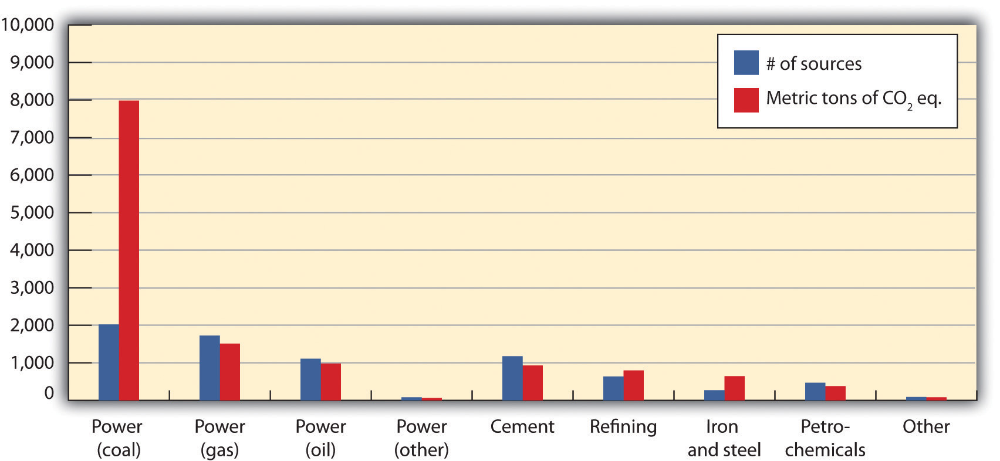
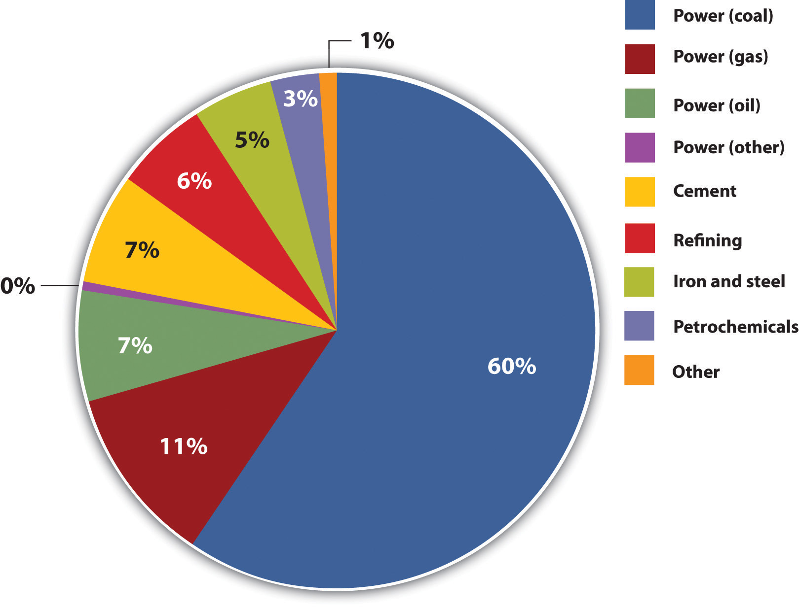
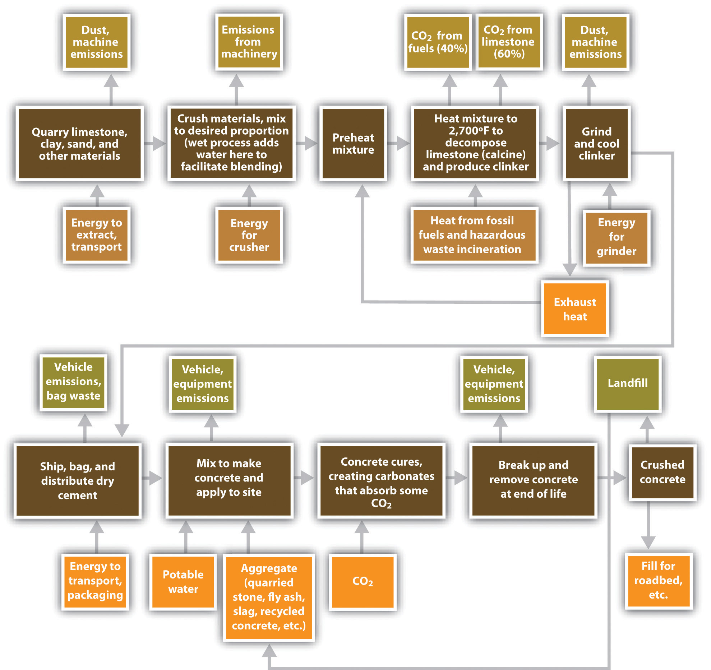
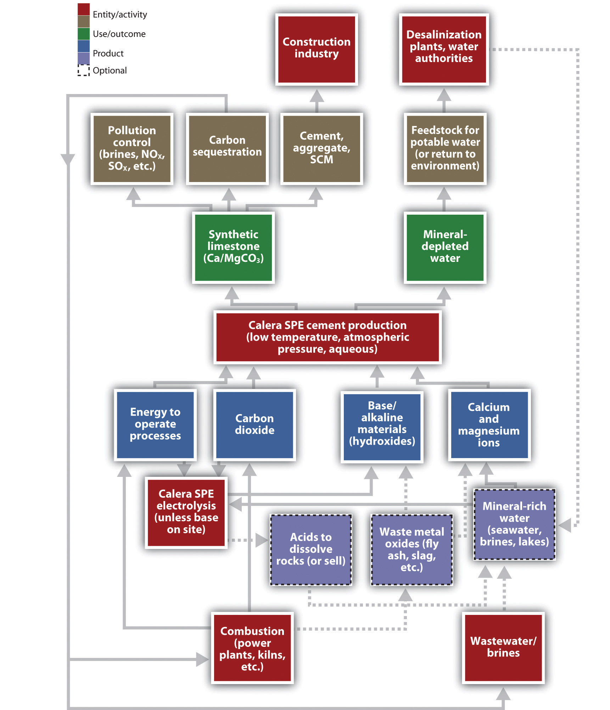
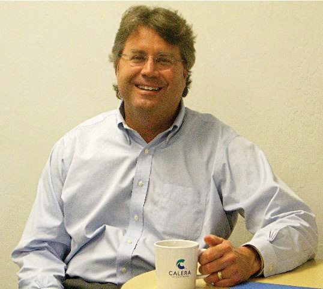
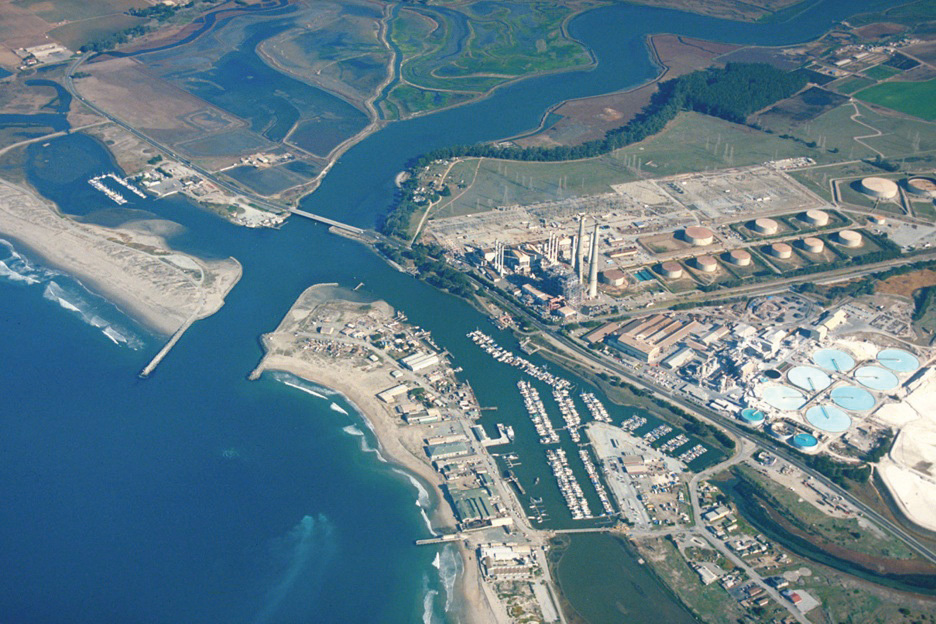

The cases in this chapter offer an opportunity to apply many of the ideas introduced in Chapter 1 "History" through Chapter 4 "Entrepreneurship and Sustainability Innovation Analysis". The key approach that differentiates this collection is the systems perspective used throughout. Thus while “Energy and Climate” is the chapter title, this chapter will discuss materials, building design, community equity implications, and health impacts as well, topics that can also be part of case discussions in later chapters. Typically such conversations are segregated into different courses and even different schools within universities. Appreciation of the interconnections across disciplines and functional areas should be one of the core takeaways from this book.
The chapter begins with a climate change technical note to provide broad background for the reader. Climate science has altered our world as well as the way we think about it. Governments and companies are reacting, with businesses on the leading edge of sustainability innovation often gaining advantages. Interestingly, the recent economic downturn has made environmental and resource use topics (e.g., reducing a firm’s resource footprint) even more salient to financial survival and success. Today it is accepted that cost-cutting measures enabled by viewing operating practices through a sustainability lens can yield significant bottom-line improvements (increased profitability). Companies with sustainability strategic awareness and sufficient resources to invest during a downturn understand that systems and product redesigns can position them for enhanced growth and advantage over less prescient competitors as the economy recovers. State and federal investments currently support a recovery that builds US capacity around “green” economic expansion. While there will be those who deny climate change is happening or reject the role assigned humans, we still need to understand the history and science of climate analysis. Furthermore, governments and companies are actively engaged in carbon market trading, carbon pricing, and reduction of carbon footprints, thus the issues must be discussed and, where opportunities present themselves, any well-managed firm will need to be positioned to respond. Entrepreneurs and innovative companies will seek new opportunities for product and process designs that can reduce climate change effects.
The thickness of the air, compared to the size of the Earth, is something like the thickness of a coat of shellac on a schoolroom globe. Many astronauts have reported seeing that delicate, thin, blue aura at the horizon of the daylit hemisphere and immediately, unbidden, began contemplating its fragility and vulnerability. They have reason to worry.Carl Sagan, Billions and Billions (New York, NY: Random House 1997), 86.
Carl Sagan
Since the beginning of their history, humans have altered their environment. Only recently, however, have we realized how human activities influence earth’s terrestrial, hydrological, and atmospheric systems to the extent that these systems may no longer maintain the stable climate and services we have assumed as the basis of our economies. The science of climate change developed rapidly in the late twentieth century as researchers established a correlation between increasing atmospheric concentrations of certain gases, human activities emitting those gases, and a rapid increase in global temperatures. Many, but by no means all, international policy makers spurred research as it became apparent that impacts ranging from melting polar ice caps to acidified oceans and extreme weather patterns were attributed to anthropogenic (human) influences on climate. Global businesses, many of which initially balked at potential economic disruption from changes in the use of fossil fuel and other business practices, have largely acceded to the need for change. Nonetheless, the overall response to the challenge has been slow and not without resistance, thereby increasing the potential opportunities and urgency.
In the early 1820s, Joseph Fourier, the French pioneer in the mathematics of heat diffusion, became interested in why some heat from the sun was retained by the earth and its atmosphere rather than being reflected back into space. Fourier conceived of the atmosphere as a bell jar with the atmospheric gases retaining heat and thereby acting as the containing vessel. In 1896, Swedish Nobel laureate and physicist Svante August Arrhenius published a paper in which he calculated how carbon dioxide (CO2) could affect the temperature of the earth. He and early atmospheric scientists recognized that normal carbon dioxide levels in the atmosphere contributed to making the earth habitable. Scientists also have known for some time that air pollution alters weather. For example, certain industrial air pollutants can significantly increase rainfall downwind of their source. As intensive agriculture and industrial activity have expanded very rapidly around the world since 1850 (Figure 5.1 "Increase in Global Carbon Emissions from Fossil Fuel Combustion, 1750–2006"), a growing body of scientific evidence has accumulated to suggest that humans influence global climate.
Figure 5.1 Increase in Global Carbon Emissions from Fossil Fuel Combustion, 1750–2006
Units of carbon are often used instead of CO2, which can be confusing. One ton of carbon equals 3.67 tons of CO2. Hence emissions of CO2 in 2006 were roughly eight billion tons of carbon, or twenty-nine billion tons of CO2.
Source: Oak Ridge National Laboratory, Carbon Dioxide Information Analysis Center, accessed August 19, 2010, http://cdiac.ornl.gov/trends/emis/graphics/global_ff_1751_2006.jpg.
The earth’s climate has always varied, which initially raised doubts about the significance of human influences on climate or suggested our impact may have been positive. Successive ice ages, after all, likely were triggered by subtle changes in the earth’s orbit or atmosphere and would presumably recur. Indeed, changes in one earth system, such as solar energy reaching the earth’s surface, can alter other systems, such as ocean circulation, through various feedback loops. The dinosaurs are thought to have gone extinct when a meteor struck the earth, causing tsunamis, earthquakes, fires, and palls of ash and dust that would have hindered photosynthesis and lowered oxygen levels and temperatures. Aside from acute catastrophes, however, climate has changed slowly, on the scale of tens of thousands to millions of years. The same paleoclimatological data also suggest a strong correlation between atmospheric CO2 levels and surface temperatures over the past 400,000 years and indicate that the last 20 years have been the warmest of the previous 1,000.National Oceanic and Atmospheric Administration Paleoclimatology, “A Paleo Perspective on Global Warming,” July 13, 2009, accessed August 19, 2010, http://www.ncdc.noaa.gov/paleo/globalwarming/home.html.
In the last decades of the twentieth century, scientists voiced concern over a rapid increase in “greenhouse gases.” Greenhouse gases (GHGs)Gases that trap heat in the earth’s atmosphere, leading to elevated surface and air temperatures. The GHGs of most concern due to their potency or prevalence are carbon dioxide, nitrous oxide, methane, and chlorofluorocarbons. were named for their role in retaining heat in earth’s atmosphere, causing a greenhouse effect similar to that in Fourier’s bell jar. Increases in the atmospheric concentration of these gases, which could be measured directly in modern times and from ice core samples, were correlated with a significant warming of the earth’s surface, monitored using meteorological stations, satellites, and other means (see Figure 5.2 "Increases in the Concentration of Atmospheric CO").
Figure 5.2 Increases in the Concentration of Atmospheric CO2, 1958–2009

Source: Scripps Institution of Oceanography and NOAA Earth System Research Lab, “Trends in Atmospheric Carbon Dioxide,” accessed August 19, 2010, http://www.esrl.noaa.gov/gmd/ccgg/trends.
The gases currently of most concern include CO2, nitrous oxide (N2O), methane (CH4), and chlorofluorocarbons (CFCs). CO2, largely a product of burning fossil fuels and deforestation, is by far the most prevalent GHG, albeit not the most potent. Methane, produced by livestock and decomposition in landfills and sewage treatment plants, contributes per unit twelve times as much to global warming than does CO2. N2O, created largely by fertilizers and coal or gasoline combustion, is 120 times as potent. CFCs, wholly synthetic in origin, have largely been phased out by the 1987 Montreal Protocol because they degraded the ozone layer that protected earth from ultraviolet radiation (Figure 5.3 "Sources and Types of GHG Emissions, 2000"). The successor hydrochlorofluorocarbons (HCFCs), however, are GHGs with potencies one to two orders of magnitude greater than CO2.
Figure 5.3 Sources and Types of GHG Emissions, 2000

Source: Riccardo Pravettoni, UNEP/GRID-Arendal and World Resources Institute, Climate Analysis Indicator Tool (CAIT), “Navigating the Numbers: Greenhouse Gas Data and International Climate Policy,” December 2005; Intergovernmental Panel on Climate Change, 1996 (data for 2000), http://maps.grida.no/go/graphic/world-greenhouse-gas-emissions-by-sector2.
In response to such findings, the United Nations and other international organizations gathered in Geneva to convene the First World Climate Conference in 1979. In 1988, a year after the Brundtland Commission called for sustainable development, the World Meteorological Organization (WMO) and the United Nations Environment Programme (UNEP) created the Intergovernmental Panel on Climate Change (IPCC)An international body of scientific experts who regularly assess the scientific, technical, and socioeconomic aspects of climate change, its risks, and possible mitigation.. The IPCC gathered 2,500 scientific experts from 130 countries to assess the scientific, technical, and socioeconomic aspects of climate change, its risks, and possible mitigation.The IPCC comprises three working groups and a task force. Working Group I assesses the scientific aspects of the climate system and climate change. Working Group II addresses the vulnerability of socioeconomic and natural systems to climate change, negative and positive consequences of climate change, and options for adapting to those consequences. Working Group III assesses options for limiting greenhouse gas emissions and otherwise mitigating climate change. The Task Force on National Greenhouse Gas Inventories implemented the National Greenhouse Gas Inventories Program. Each report has been written by several hundred scientists and other experts from academic, scientific, and other institutions, both private and public, and has been reviewed by hundreds of independent experts. These experts were neither employed nor compensated by the IPCC nor by the United Nations system for this work. The IPCC’s First Assessment Report, published in 1990, concluded that the average global temperature was indeed rising and that human activity was to some degree responsible (Figure 5.4 "Temperature Elevation, 1880–2009"). This report laid the groundwork for negotiation of the Kyoto Protocol, an international treaty to reduce GHG emissions that met with limited success. Subsequent IPCC reports and myriad other studies indicated that climate change was occurring faster and with worse consequences than initially anticipated.
Figure 5.4 Temperature Elevation, 1880–2009
Source: NASA, Goddard Institute for Space Studies, “GISS Surface Temperature Analysis,” accessed August 19, 2010, http://data.giss.nasa.gov/gistemp/graphs.
Modern systematic measurement of CO2 emissions began with the work of scientist Charles David Keeling in the 1950s. The steady upward trajectory of atmospheric CO2 graphed by Dr. Keeling became known as the Keeling curve. This comment is from a front page New York Times article on December 21, 2010: “In later years, as the scientific evidence about climate change grew, Dr. Keeling’s interpretations became bolder, and he began to issue warnings. In an essay in 1998, he replied to claims that global warming was a myth, declaring that the real myth was that ‘natural resources and the ability of the earth’s habitable regions to absorb the impacts of human activities are limitless.’ In an interview in La Jolla, Dr. Keeling’s widow, Louise, said that if her husband had lived to see the hardening of the political battle lines over climate change, he would have been dismayed. “He was a registered Republican,” she said. “He just didn’t think of it as a political issue at all.”Justin Gillis, “Temperature Rising: A Scientist, His Work and a Climate Reckoning,” New York Times, December 21, 2010, http://www.nytimes.com/2010/12/22/science/earth/22carbon.html?_r=1&pagewanted=2.
The IPCC Fourth Assessment Report in 2007 summarized much of the current knowledge about global climate change, which included actual historical measurements as well as predictions based on increasingly detailed models.Rajendra K. Pachauri and Andy Reisinger, eds. (core writing team), Climate Change 2007: Synthesis Report (Geneva, Switzerland: Intergovernmental Panel on Climate Change, 2008). Available from the Intergovernmental Panel on Climate Change, “IPCC Fourth Assessment Report: Climate Change 2007,” accessed August 19, 2010, http://www.ipcc.ch/publications_and_data/ar4/syr/en/contents.html. A fifth assessment report was begun in January 2010 but has yet to be completed. Unless otherwise footnoted, all numbers in this list are from the fourth IPCC assessment. These findings represent general scientific consensus and typically have 90 percent or greater statistical confidence.
The global average surface temperature increased 0.74°C ± 0.18°C (1.3°F ± 0.32°F) from 1906 to 2005, with temperatures in the upper latitudes (nearer the poles) and over land increasing even more. In the same period, natural solar and volcanic activity would have decreased global temperatures in the absence of human activity. Depending on future GHG emissions, the average global temperature is expected to rise an additional 0.5°C to 4°C by 2100, which could put over 30 percent of species at risk for extinction. Eleven of the twelve years from 1995 to 2006 were among the twelve warmest since 1850, when sufficient records were first kept. August 2009 had the hottest ocean temperatures and the second hottest land temperatures ever recorded for that month, and 2010 tied 2005 as the warmest year in the 131-year instrumental record for combined global land and ocean surface temperature.Data more current than the fourth IPCC report are available from NASA and NOAA, among other sources, at NASA, “GISS Surface Temperature Analysis (GISTEMP),” accessed January 27, 2011, http://data.giss.nasa.gov/gistemp; and National Oceanic and Atmospheric Administration, “NOAA: Warmest Global Sea-Surface Temperatures for August and Summer,” September 16, 2009, accessed January 27, 2011, http://www.noaanews.noaa.gov/stories2009/20090916_globalstats.html.
Precipitation patterns have changed since 1900, with certain areas of northern Europe and eastern North and South America becoming significantly wetter, while the Mediterranean, central Africa, and parts of Asia have become significantly drier. Record snowfalls in Washington, DC, in the winter of 2009–10 reflected this trend, as warmer, wetter air dumped nearly one meter of snow on the US capital in two storms.Bryan Walsh, “Another Blizzard,” Time, February 10, 2010, accessed January 7, 2011, http://www.time.com/time/health/article/0,8599,1962294,00.html.
Coral reefs, crucial sources of marine species diversity, are dying, due in part to their sensitivity to increasing ocean temperatures and ocean acidity. Oceans acidify as they absorb additional CO2; lower pH numbers indicate more acidic conditions. Ocean pH decreased 0.1 points between the years 1750 to 2000 and is expected to decrease an additional 0.14 to 0.35 pH by 2100. (A pH difference of one is the difference between lemon juice and battery acid.)
Glaciers and mountain snowpacks, crucial sources of drinking water for many people, have been retreating for the past century. From 1979 to 2006, Arctic ice coverage declined between 6 and 10 percent, with declines in summer coverage of 15–30 percent (Figure 5.7 "Decrease in Arctic Sea Ice, 1979–2009").
Figure 5.7 Decrease in Arctic Sea Ice, 1979–2009
Source: NOAA, National Snow and Ice Data Center, accessed March 5, 2011, ftp://sidads.colorado.edu/DATASETS/NOAA/G02135/Jan/N_01_area.txt.
Seas have risen 20 to 40 centimeters over the past century as glaciers melted and water expanded from elevated temperatures. Sea levels rose at a rate of 1.8 (±0.5) millimeters per year from 1961 to 2003. From 1993 to 2003 alone, that rate was dramatically higher: 3.1 (±0.7) millimeters per year. An additional rise in sea level of 0.4 to 3.7 meters (1.3 to 12.1 feet) is expected by 2100. The former amount would threaten many coastal ecosystems and communities;James G. Titus, K. Eric Anderson, Donald R. Cahoon, Dean B. Gesch, Stephen K. Gill, Benjamin T. Gutierrez, E. Robert Thieler, and S. Jeffress Williams (lead authors), Coastal Elevations and Sensitivity to Sea-Level Rise: A Focus on the Mid-Atlantic Region (Washington, DC: US Climate Change Science Program, 2009), accessed August 19, 2010, http://www.epa.gov/climatechange/effects/coastal/sap4-1.html. the latter would be enough to submerge completely the archipelago nation of the Maldives. If trends continue as predicted, inundation of global coastal areas and island communities may soon present major human migration and resettlement challenges. Many consider this the most critical climate change issue.
Trees are moving northward into the tundra. A thawing permafrost, meanwhile, would release enough methane to catastrophically accelerate global warming.National Science Foundation, “Methane Releases from Arctic Shelf May Be Much Larger and Faster Than Anticipated,” news release, March 4, 2010, accessed January 7, 2011, http://www.nsf.gov/news/news_images.jsp?cntn_id=116532&org=NSF and http://www.nsf.gov/news/news_summ.jsp?cntn_id=116532&org=NSF&from=news. Other species, too, are migrating or threatened, such as the polar bear. The population of polar bears is expected to decline two-thirds by 2050 as their ice pack habitats disintegrate under current trends.US Geological Survey, “USGS Science to Inform U.S. Fish & Wildlife Service Decision Making on Polar Bears, Executive Summary,” accessed January 27, 2011, http://www.usgs.gov/newsroom/special/polar_bears/docs/executive_summary.pdf. Warmer waters will also increase the range of cholera and other diseases and pests.World Health Organization, “Cholera,” June 2010, accessed August 19, 2010, http://www.who.int/mediacentre/factsheets/fs107/en/index.html.
At the same time that humans have increased production of GHGs, they have decreased the ability of the earth’s ecosystems to reabsorb those gases. Deforestation and conversion of land from vegetation to built structures reduces the size of so-called carbon sinks. Moreover, conventional building materials such as pavement contribute to local areas of increased temperature, called heat islands, which in the evenings can be 12°C (22°F) hotter than surrounding areas. These elevated local temperatures further exacerbate the problems of climate change for communities through energy demand, higher air-conditioning costs, and heat-related health problems.US Environmental Protection Agency, “Heat Island Effect,” accessed January 27, 2011, http://www.epa.gov/heatisland.
By impairing natural systems, climate change impairs social systems. A shift in climate would alter distributions of population, natural resources, and political power. Droughts and rising seas that inundate populous coastal areas would force migration on a large scale. Unusually severe weather has already increased costs and death tolls from hurricanes, floods, heat waves, and other natural disasters. Melting Arctic ice packs have also led countries to scramble to discover and dominate possible new shipping routes. When the chairman of the Norwegian Nobel Committee awarded the 2007 Nobel Peace Prize to the IPCC and Al Gore, he said, “A goal in our modern world must be to maintain ‘human security’ in the broadest sense.” Similarly, albeit with different interests in mind, the United States’ 2008 National Intelligence Assessment, which analyzes emerging threats to national security, focused specifically on climate change.Ole Danbolt Mjøs, “Award Ceremony Speech” (presentation speech for the 2007 Nobel Peace Prize, Oslo, Norway, December 10, 2007), accessed January 7, 2011, http://nobelprize.org/nobel_prizes/peace/laureates/2007/presentation-speech.html.
Scientists have tried to define acceptable atmospheric concentrations of CO2 or temperature rises that would still avert the worst consequences of global warming while accepting we will likely not entirely undo our changes. NASA scientists and others have focused on the target of 350 parts per million (ppm) of CO2 in the atmosphere.James Hansen, Makiko Sato, Pushker Kharecha, David Beerling, Valerie Masson-Delmotte, Mark Pagani, Maureen Raymo, Dana L. Royer, and James C. Zachos, “Target Atmospheric CO2: Where Should Humanity Aim?” The Open Atmospheric Science Journal 2 (2008): 217–31. Their paleoclimatological data suggest that a doubling of CO2 in the atmosphere, which is well within some IPCC scenarios for 2100, would likely increase the global temperature by 6°C (11°F). Atmospheric CO2 levels, however, passed 350 ppm in 1990 and reached 388 ppm by early 2010. This concentration will continue to rise rapidly as emissions accumulate in the atmosphere. Worse, even if the CO2 concentration stabilizes, temperatures will continue to rise for some centuries, much the way a pan on a stove keeps absorbing heat even if the flame is lowered. Hence scientists have begun to suggest that anything less than zero net emissions by 2050 will be too little, too late; policy makers have yet to embrace such aggressive action.H. Damon Matthews and Ken Caldeira, “Stabilizing Climate Requires Near-Zero Emissions,” Geophysical Research Letters 35, no. 4: L04705 (2008), 1–5.
The primary international policy response to climate change was the United Nations Framework Convention on Climate Change (UNFCCC)An international convention adopted in 1992 and entered in force in 1994 that became the first binding international legal instrument dealing directly with climate change.. The convention was adopted in May 1992 and became the first binding international legal instrument dealing directly with climate change. It was presented for signature at the Earth Summit in Rio de Janeiro and went into force in March 1994 with signatures from 166 countries. By 2010 the convention had been accepted by 193 countries.United Nations Framework Convention on Climate Change, “Status of Ratification of the Convention,” accessed January 27, 2011, http://unfccc.int/kyoto_protocol/status_of_ratification/items/2613.php. UNFCCC signatories met in 1997 in Kyoto and agreed to a schedule of reduction targets known as the Kyoto Protocol. Industrialized countries committed to reducing emissions of specific GHGs, averaged over 2008–12, to 5 percent below 1990 levels. The European Union (EU) committed to an 8 percent reduction and the United States to 7 percent. Other industrialized countries agreed to lesser reductions or to hold their emissions constant, while developing countries made no commitments but hoped to industrialize more cleanly than their predecessors. Partly to help developing countries, the Kyoto Protocol also created a market for trading GHG emission allowances. If one country developed a carbon sink, such as by planting a forest, another country could buy the amount of carbon sequestered and use it to negate the equivalent amount of its own emissions.
The Kyoto Protocol has ultimately suffered from a lack of political will in the United States and abroad. The United States signed it, but the Senate never ratified it. US President George W. Bush backed away from the emission reduction targets and eventually rejected them entirely. By the time he took office in 2001, a 7 percent reduction from 1990 levels for the United States would have translated into a 30 percent reduction from 2001 levels. US GHG emissions, instead of declining, rose 14 percent from 1990 to 2008 (see Figure 5.8 "Increase in US Energy Consumption, Total and Renewable, in Billions of BTU, 1949–2008" for related energy consumption).US Environmental Protection Agency, 2010 Greenhouse Gas Inventory Report (Washington, DC: US Environmental Protection Agency, 2010), accessed January 29, 2011, http://www.epa.gov/climatechange/emissions/downloads10/US-GHG -Inventory-2010_ExecutiveSummary.pdf. Almost all other Kyoto signatories will also fail to meet their goals. The EU, in contrast, is on track to meet or exceed its Kyoto targets.European Union, “Climate Change: Progress Report Shows EU on Track to Meet or Over-Achieve Kyoto Emissions Target,” news release, November 12, 2009, accessed August 19, 2010, http://europa.eu/rapid/pressReleasesAction.do?reference=IP/09/1703&format=HTML&aged=0&language=EN&guiLanguage=en. GHG pollution allowances for major stationary sources have been traded through the EU Emissions Trading System since 2005. The consensus in Europe is that the Kyoto Protocol is necessary and action is required to reduce GHGs.
Figure 5.8 Increase in US Energy Consumption, Total and Renewable, in Billions of BTU, 1949–2008

Source: Energy Information Administration, “Annual Energy Review, 2008,” accessed March 10, 2011, http://www.eia.doe.gov/aer/txt/ptb1001.html and http://www.eia.doe.gov/aer/txt/ptb0201a.html.
The Kyoto Protocol expires in 2012, so meetings have begun to negotiate new goals. In December 2007, UNFCCC countries met in Bali to discuss a successor treaty. The conference made little headway, and countries met again in December 2009 in Copenhagen. That conference again failed to generate legally binding reduction goals, but the countries confirmed the dangers of climate change and agreed to strive to limit temperature increases to no more than 2°C total. A subsequent meeting was held in Cancun, Mexico, in late 2010.
Individual countries and US states and agencies have acted, nonetheless, in the absence of broader leadership. In 2007, EU countries set their own future emissions reduction goals, the so-called 20-20-20 strategy of reducing emissions 20 percent from 1990 levels by 2020 while reducing energy demand 20 percent through efficiency and generating 20 percent of energy from renewable resources. In January 2008 the European Commission proposed binding legislation to implement the 20-20-20 targets. This “climate and energy package” was approved by the European Parliament and Council in December 2008. It became law in June 2009.European Commission, “The EU Climate and Energy Package,” accessed January 29, 2011, http://ec.europa.eu/clima/policies/brief/eu/package_en.htm and http://ec.europa.eu /environment/climat/climate_action.htm. In the Northeast United States, ten states collaborated to form the Regional Greenhouse Gas Initiative (RGGI), which caps and gradually lowers GHG emissions from power plants by 10 percent from 2009 to 2018. A similar program, the Western Climate Initiative, is being prepared by several western US states and Canadian provinces, and California’s Assembly Bill 32, the Global Warming Solutions Act, set a state GHG emissions limit for 2020.California Environmental Protection Agency Air Resources Board, “Assembly Bill 32: Global Warming Solutions Act,” accessed August 19, 2010, http://www.arb.ca.gov/cc/ab32/ab32.htm. Likewise, the federal government under President Barack Obama committed to reducing its emissions, while the US Environmental Protection Agency (EPA), in response to a 2007 lawsuit led by the state of Massachusetts, prepared to regulate GHGs under the Clean Air Act.
On December 23, 2010, the New York Times reported, “The Environmental Protection Agency announced a timetable on Thursday for issuing rules limiting greenhouse gas emissions from power plants and oil refineries, signaling a resolve to press ahead on such regulation even as it faces stiffening opposition in Congress. The agency said it would propose performance standards for new and refurbished power plants next July, with final rules to be issued in May 2012.”Matthew L. Wald, “E.P.A. Says It Will Press on With Greenhouse Gas Regulation,” New York Times, December 23, 2010, http://www.nytimes.com/2010/12/24/science/earth/24epa.html?_r=1&ref=environmentalprotectionagency.
Members of Congress, however, have threatened to curtail the EPA’s power to do so, either by altering the procedures for New Source Review that would require carbon controls or by legislatively decreeing that global warming does not endanger human health.“Coal State Senators Battle EPA to Control Greenhouse Gases,” Environmental News Service, February 23, 2010, accessed January 7, 2011, http://www.ens-newswire.com/ens/feb2010/2010-02-23-093.html; Juliet Eilperin and David A. Fahrenthold, “Lawmakers Move to Restrain EPA on Climate Change,” Washington Post, March 5, 2010, accessed January 7, 2011, http://www.washingtonpost.com/wp-dyn/content/article/2010/03/04/AR2010030404715.htm. In contrast, one bill to combat climate change would have reduced US emissions by 80 percent from 2005 levels by 2050. It passed the House of Representatives in 2009 but failed to make it to a Senate vote.
Certain industries are more vulnerable than others to the economic impacts of climate change. Industries that are highly dependent on fossil fuels and high CO2 emitters, such as oil and gas companies, cement producers, automobile manufacturers, airlines, and power plant operators, are closely watching legislation related to GHGs. The reinsurance industry, which over the past several years has taken large financial losses due to extreme weather events, is deeply concerned about global climate change and liabilities for its impacts.
Given the potential costs of ignoring climate change, the costs of addressing it appear rather minimal. In 2006, the UK Treasury released the Stern Review on the Economics of Climate Change. The report estimated that the most immediate effects of global warming would cause damages of “at least 5% of global GDP each year, now and forever. If a wider range of risks and impacts is taken into account, the estimates of damage could rise to 20% of GDP or more.” Actions to mitigate the change, in contrast, would cost only about 1 percent of global GDP between 2010 and 2030.Lord Stern, “Executive Summary,” in Stern Review on the Economics of Climate Change (London: HM Treasury, 2006), 1, accessed January 7, 2011, http://www.hm-treasury.gov.uk/sternreview_index.htm.
Corporate reactions have ranged from taking action now to reduce or eliminate emissions of GHGs and active engagement with carbon trading markets to actively opposing new policies that might require changes in products or processes. Anticipatory firms are developing scenarios for potential threats and opportunities related to those policies, public opinion, and resource constraints. Among those companies actively pursuing a reduction in GHGs, some cite financial gains for their actions. Walmart and General Electric both committed to major sustainability efforts in the first decade of the twenty-first century as have many smaller corporations. Central to their strategies are GHG reduction tactics.
Excessive GHG emissions may reflect inefficient energy use or loss of valuable assets, such as when natural gas escapes during production or use. The Carbon Disclosure Project emerged in 2000 as a private organization to track GHG emissions for companies that volunteered to disclose their data. By 2010, over 1,500 companies belonged to the organization, and institutional investors used these and other data to screen companies for corporate social responsibility. Out of concern for good corporate citizenship and in anticipation of potential future regulation, GHG emissions trading has become a growing market involving many large corporations. The emissions trading process involves credits for renewable energy generation, carbon sequestration, and low-emission agricultural and industrial practices that are bought and sold or optioned in anticipation of variable abilities to reach emissions reduction targets. Some companies have enacted internal, competitive emissions reduction goals and trading schemes as a way to involve all corporate divisions in a search for efficiency, cleaner production methods, and identification of other opportunities for reducing their contribution to climate change.
In parallel to tracking GHG emissions, clean tech or clean commerce has become increasingly prevalent as a concept and a term to describe technologies, such as wind energy, and processes, such as more efficient electrical grids, that do not generate as much or any pollution. New investments in sustainable energy increased between 2002 and 2008, when total investments in sustainable energy projects and companies reached $155 billion, with wind power representing the largest share at $51.8 billion.Rohan Boyle, Chris Greenwood, Alice Hohler, Michael Liebreich, Eric Usher, Alice Tyne, and Virginia Sonntag-O’Brien, Global Trends in Sustainable Energy Investment 2009, United Nations Environment Programme, 2008, accessed January 29, 2011, http://sefi.unep.org/fileadmin/media/sefi/docs/publications/Global_Trends_2008.pdf. Also in 2008, sustainability-focused companies as identified by the Dow Jones Sustainability Index or Goldman Sachs SUSTAIN list outperformed their industries by 15 percent over a six-month period.Daniel Mahler, Jeremy Barker, Louis Belsand, and Otto Schulz, Green Winners (Chicago: A. T. Kearney, 2009), 2, http://www.atkearney.com/images/global/pdf/Green_winners.pdf.
Our climate may always be changing, but humans have changed it dramatically in a short time with potentially dire consequences. GHGs emitted from human activities have increased the global temperature and will continue to increase it, even if we ceased all emissions today. International policy makers have built consensus for the need to curb global climate change but have struggled to take specific, significant actions. In contrast, at a smaller scale, local governments and corporations have attempted to mitigate and adapt to an altered future. Taking a proactive stance on climate change can make good business sense.
At a minimum, strategic planning should be informed by climate change concerns and the inherent liabilities and opportunities therein. Whether operationalized by large firms or smaller companies, one important form of entrepreneurial innovation inspired by climate change challenges today is to apply tools associated with reduced climate and resource footprints that result in systemic reduction of energy and material inputs. When applied within firms and across supply chains, such tools increase profitability by lowering costs. More important, these measures can lead to innovations made visible by the efforts. At minimum, opportunities for product design and process improvements that both reduce climate change impact and increase resource efficiency and consumer loyalty make sense. Companies that chart a course around the most likely set of future conditions with an eye to competitive advantage, good corporate citizenship, and stewardship of natural resources are likely to optimize their profitability and flexibility—and hence their strategic edge—in the future.
The first case looks at how a young entrepreneur, who recently completed his graduate training, successfully built an innovative pilot effort within a large real estate firm that manages real estate and ski resorts.
It might seem unlikely that a real estate developer, much less a project focused on expanding a ski resort, could provide a model of sustainable business practices, but real estate developer East West Partners (EWP) has done just that through its collaboration with a ski resort called Northstar Tahoe. Land conservation, waste reduction, and the adoption of wind energy are all part of EWP’s incorporation of environmental and community considerations into every aspect of the project. At the same time the developer realizes significant cost savings and builds a reputation that enhances its competitive advantage. This was accomplished through top leadership’s creating the opportunity for a young man with a newly minted MBA to innovatively integrate sustainability thinking into strategy.
East West Partners was founded in the 1970s by a group of real estate professionals working in the Richmond, Virginia, area. To “protect what we’re here to enjoy” was a founding principle for EWP. In the mid-1980s, two senior EWP partners formed autonomous divisions in North Carolina and Colorado, maintaining a commitment to community and environmental quality and a loose affiliation with the Virginia group.
In 2000, Booth Creek Holdings, Northstar ski resort’s parent company, approached EWP’s Colorado office about a joint venture to develop land owned by the resort. Their subsequent agreement created East West Partners, Tahoe. EWP’s initial decision to partner in the redevelopment of Northstar was based on the project’s positive economic potential and sense of fit between EWP’s and Northstar’s business philosophy. The project was big. Northstar, a popular, family-oriented ski resort, owned hundreds of acres of land that could be developed into residential home sites, each with a market value of hundreds of thousands of dollars. The expansion and redevelopment of Northstar-at-Tahoe, which included a ski village with an ice rink and a massive increase in resort housing, including fractional-ownership condominiums, was expected to cost $2.7 billion over fifteen years. EWP would get zoning approvals, develop land, and build residences and commercial properties, profiting ultimately from property sales and management.
EWP Tahoe’s chief executive, Roger Lessman, and project manager, David Tirman, reasoned that through careful design and the latest green building techniques they could develop new homes with limited environmental impact that would save money on owner operations, particularly energy and water costs. Furthermore, environmentally responsible development and a proactive approach with the local communities would enhance community relations, possibly ease government approvals, and add to the sales appeal of their properties.
By mid-2002, however, the importance of environmental performance and the level of effort necessary to incorporate it into branding and marketing had exceeded initial expectations. Within a year of helping area residents develop a new community plan, EWP discovered that a small but vocal group of citizens was unilaterally antigrowth and opposed to any development, regardless of efforts toward sustainability. It became clear to Lessman and Tirman that they would need help working with the community and establishing EWP as a resort development industry leader sensitive to local social and environmental concerns.
In the early 1990s, no single ski company could claim more than 3 percent of the North American market. But industry shifts were under way and by 2002, about 20 percent of US ski resorts captured 80 percent of skier visits. The total for US ski visits in 2001–2 was 54,411,000, with the four largest companies accounting for about 15,000,000. The trends toward acquisitions and larger companies with multiple resorts were accelerating. So too were the industry’s awareness and concern about global warming and its accompanying changing weather patterns influencing snowfalls and spring melts. Because of the industry’s intimate links to well-functioning natural systems, its acute weather dependence, and the protection of aesthetic beauty associated with nature, which customers travel there to enjoy (and pay to surround themselves with), the term sustainability was an increasingly familiar one in ski resort strategy discussions.
During the 1990s the industry emphasized ski villages and on-mountain residences. The affluence of aging baby boom generation skiers and their growing affinity for amenities such as shopping, restaurant dining, and off-season recreation alternatives led to a development surge in ski area villages and mountain communities. Unfortunately, social and environmental issues developed alongside the economic windfall provided by ski area land development. The second homes and high-end shops that attracted wealthy skiers also displaced lower-income residents who lived and worked in or near resort areas. Wildlife that was dependent on the fragile mountain habitat was displaced as well.
Environmental groups issued scathing reports on the damage caused by ski area development and rated ski areas for their impacts on wildlife. In October 1998, environmental activists in Vail, Colorado, protested a ski area expansion into Canada lynx habitat by burning ski resort buildings in a $12 million fire.Hal Clifford, “Downhill Slide,” Sierra, January/February 2003, 35, accessed January 7, 2011, http://www.sierraclub.org/sierra/200301/ski.asp. Elsewhere, local citizen groups pursued less radical and perhaps more effective means of protecting mountain land and communities through actions that blocked, delayed, and limited development plan approvals by local zoning boards. In the California market, land developers faced very difficult government approval processes. Local government agencies and citizens were key players who could block or supply approvals for land development plans.
The proactive approach that EWP adopted—engaging all relevant actors in an open process—had both benefits and drawbacks. It seemed that a small group of citizens would inevitably oppose development of any kind, and keeping that group informed might not have been in a developer’s best interest. On the other hand, a majority of nongovernmental organizations (NGOs) and local residents were likely to see the merit of socially and environmentally sustainable development, which argued for EWP’s full disclosure of its plans with sustainability considerations factored in throughout. The trust of locals, won through an open and transparent planning process, seemed to speed approvals and inform and even attract customers. EWP’s decision was to proceed with the sustainability-infused strategy and accept the risk that construction delays related to its proactive approach could cause added expenses, potentially overwhelming the benefits of goodwill, market acceptance, and premium pricing.
EWP executives knew that environmental concerns were high on the list of factors they should consider in the Northstar development project given the area’s high sensitivity to environmental health and preservation issues. Not only were prospective buyers more environmentally aware, but also, in the California market, land developers faced a very difficult government approval process relative to that in other states.
To address these concerns in the summer of 2002, Lessman hired Aaron Revere as director of environmental initiatives and made him responsible for ensuring that no opportunity for environmental sustainability was overlooked in building and operating the resort consortium. Revere, a recent University of Virginia environmental science and Darden School of Business MBA graduate, made it clear to subcontractors and materials suppliers that any attempt to substitute techniques or materials that circumvented environmental design facets would not be overlooked or tolerated. With complete top management support, Revere’s efforts met with little or no internal resistance. Coworkers wanted to help preserve the natural beauty of the areas they worked in and took a strong interest in new methods for reducing environmental impact.
In the new development model Revere proposed, sustainability would be a defining criterion from the outset. He presented top management with a business plan for making environmental amenities a central platform that differentiated EWP’s project designs. He developed sustainability guidelines and outlined a strategy for making the Tahoe projects’ environmental criteria a model for design and marketing. EWP would streamline government approvals by meeting with community stakeholders and outlining EWP’s program for corporate responsibility before a project began. Contractors, subcontractors, suppliers, and maintenance services interested in working with an EWP project would know as much about a project’s environmental and social criteria as they did about its economics. Marketing and sales personnel would be educated about the sustainability qualities of the project from the start and were expected to use those qualities to help generate sales. As the story unfolded, early tests of EWP’s ability to translate ideals into concrete actions with measurable results came quickly.
Revere was pleased to find that other top employees, particularly Northstar project manager David Tirman, had already written of EWP’s intent to make environmental sustainability a key feature. The Leadership in Energy and Environmental Design (LEED) green building certification served as a cornerstone in these efforts. The LEED system was the result of a collaborative panel of respected green building specialists convened by the US Green Building Council (USGBC). The USGBC was formed in 1993 to address the growing US interest in sustainable building technology. The group was associated with the American Institute of Architects (AIA), the leading US architectural design organization. USGBC created the LEED system to provide unambiguous standards that would allow purchasers and end users to determine the validity of environmental claims made by builders and developers. Additionally, LEED provided conscientious industry players with a marketing tool that differentiated their products according to their efforts to minimize adverse health and environmental impacts while maintaining high standards for building quality and livability.
EWP expected to be among the largest builders of LEED-certified projects as that certification system branched into residential buildings. EWP encouraged customers who bought undeveloped lots to use LEED specifications and was offering guidelines and recommended suppliers and architects. By 2006, LEED certification was sought for all Northstar structures.
Successful projects implemented with LEED certification by 2007 included careful dismantling of the clock tower building at Northstar. EWP worked with the nonprofit group Institute for Local Self-Reliance (ILSR) to develop a deconstruction and sales strategy for the assets. Revere, who with three other EWP employees had become a LEED-certified practitioner, documented the percentage of waste diverted from the landfill, energy savings, and CO2 offset credits that would result in tax benefits to EWP.
EWP’s renovation of Sunset’s restaurant on the shore of Lake Tahoe was already under way when Revere was hired. Revere nevertheless wanted to pursue LEED certification for every possible Tahoe Mountain Resorts structure. He soon became a familiar figure at the restaurant, finding design changes, products, and processes that captured environmentally effective building opportunities in the simplest and most efficient ways. His presence on the job enabled Revere to see new opportunities: A system for dispensing nonpolluting cleaning chemicals was installed; and “gray water” from sinks was drained separately, run through a special coagulation and filtration system, and reused for watering landscaping plants outside the restaurant. Sawdust from sanding the recycled redwood decking was captured and prevented from entering Lake Tahoe.
The end result of Revere’s efforts and the enthusiastic participation of the architect, contractors, workers, and even the chefs was the first restaurant renovation to receive LEED certification and a marketing tool that appealed to the resort’s environmentally aware clientele. By the time the renovation was completed, Revere estimated that the expense of seeking superior environmental performance was a negligible part of total renovation cost. Savings on operations—due to low energy-use lighting, maximum use of daylight and air circulation, natural cooling, and superior insulation—were expected to more than pay for the additional cost within the first two to three years.
While the pursuit of LEED certification for buildings was an excellent step toward reducing environmental impact, Revere and EWP management knew that they would have to do more to persuade the local community of their commitment. In 2002, the problem of habitat degradation from ski areas became the topic of considerable negative press. The environmental group Ski Area Citizens’ Coalition (SACC) published claims that ski areas had transitioned from economically marginal winter recreation facilities to year-round resorts with premium real estate developments, mostly without sensitivity to environmental and social issues. The group went on to rate several prominent ski areas on environmental concerns, issuing grades from A to F, on its website.Ski Area Citizens’ Coalition, “Welcome to the 2011 Ski Area Report Card,” accessed January 7, 2011, http://www.skiareacitizens.com.
Since the SACC weighted its ratings heavily on habitat destruction, and new construction necessarily destroyed habitat, Northstar, which planned a 200-acre expansion of its ski area, a 21-acre village and a 345-acre subdivision, fared poorly. While other ski areas with more land and larger residential areas had disturbed more habitats, the SACC viewed past development as “water over the dam.” In the eyes of the group, Northstar’s planned expansion of both ski trails and housing overwhelmed any possible sustainable development efforts. Though the SACC rating would probably have little if any impact on the number of skiers visiting Northstar or the number of new homes sold, EWP executives were nevertheless annoyed. They were working hard to be good stewards of the land, determined to set an example for profitable, socially and environmentally responsible development and operations without giving up their planned projects.
Rather than ignore the SACC rating and environmentalists’ concerns about development of any wilderness area, EWP management, under Aaron Revere’s leadership, began an open and direct dialogue with conservation groups such as Sierra Watch and the Mountain Area Preservation Foundation. In March 2005, the groups reached what many termed as a precedent-setting agreement to limit Northstar’s development of its eight thousand acres of land to fewer than eight hundred acres. In addition, the agreement required a transfer fee on all Northstar real estate sales to be used to purchase and protect sensitive wildlife habitat in the Martis Valley area of Tahoe. The fees were expected to total more than $30 million for the Martis Valley alone. In contrast, the previous two state conservation bonds raised $33 million for the entire Sierra mountain range.
In addition, the agreement called for a “habitat conservation plan” for the more than seven thousand acres of Northstar land not earmarked for residential and commercial development. EWP viewed that agreement as having dual benefits. Through the agreement, environmental and community groups dropped their opposition to the development projects proposed by Northstar, and a large tract of land was protected for the foreseeable future. The additional revenue generated for the purchase of more protected acreage allowed EWP to do more than simply responsibly develop land. Through the strategic intent to develop highly desirable and environmentally sustainable properties, the company had designed a new method of generating funds for the protection of the natural environment that is by definition key to its properties’ success.
Aaron Revere’s definition of his job with EWP included proving wherever possible the commercial viability of “doing the right thing.” What preserved and enhanced the natural environmental systems on which the resort depended would serve the longer-term economic interests of the owner. But Revere was interested in the quantitative gains in the short and intermediate terms. He wanted to add to the growing pool of data in the ski industry on the cost differentials between typical construction and development practices and those that strived to incorporate sustainable design elements. Tahoe Mountain Resorts provided an ideal opportunity for tracking improvements and measuring the economic benefits that sustainable practices brought to the company. Metrics included biodiversity/natural capital (ecosystem, flora and fauna, and rare species assessments), air and water quality, and water and energy use. Revere’s strategy included building an environmental initiation team within EWP/Northstar. He also sought early adopters in both Tahoe Mountain Resorts and nearby Booth Creek who would build sustainability into the corporate culture and brand. Sales and marketing people were encouraged to view sustainability features as what he termed “cooler and sexier” selling points that could command a premium price. Revere used weekly e-mail advisories to help keep implementation ideas fresh in the minds of his coworkers. He wanted to put local and organic food items on the menus of Tahoe Mountain Resort restaurants and eliminate the serving of threatened species such as Chilean sea bass and swordfish—the idea was to be consistent and authentic across operations. Advisories sent to colleagues included the following: “Consider permeable paving stones or grass instead of asphalt, stockpiling snow from road-clearing above ‘sinks’ that would replenish aquifers, preformed walls, VOC [volatile organic compound]-free paints, stains, and sealants, water-conserving sensors on faucets and lights, and recyclable carpeting.”Andrea Larson, East West Partners: Sustainable Business Strategy in Real Estate and Ski Resorts, UVA-ENT-0093 (Charlottesville: Darden Business Publishing, University of Virginia, October 21, 2008).
The California Waste Management Board awarded EWP its Waste Reduction Awards Program’s highest honor for eight consecutive years (1997–2004). Describing EWP, the board stated, “To date, East West Partners has achieved successful and unique waste reduction and recycling activities within its Coyote Moon golf course operations, Wild Goose restaurant operations, general office operations, and the planning of Old Greenwood and the Northstar Ski Village. From May 2002 to May 2003, East West Partners successfully diverted an estimated 12.5 tons of material from landfill. These efforts to ‘remove the concept of waste’ from their company vocabulary saved East West Partners thousands of dollars.”Andrea Larson, East West Partners: Sustainable Business Strategy in Real Estate and Ski Resorts, UVA-ENT-0093 (Charlottesville: Darden Business Publishing, University of Virginia, October 21, 2008).
Under Revere’s direction, EWP achieved Audubon International’s Gold Level certification for the Gray’s Crossing Golf Course. Only three other golf courses in the nation had achieved this status for exceptional environmental sensitivity in the design and operations of both the facility and the community that surrounds it. Working with Revere and EWP’s hand-picked contractors, the Audubon sustainable development experts were sufficiently impressed by the company’s sincere efforts on sustainability as a strategic theme that they offered to work with EWP to make the redevelopment of a second course, the Old Greenwood Golf Course, a Gold Level project as well. Sustainable design principles applied to golf courses created significant cost and environmental savings, requiring only 50 percent as much water and fertilizer as conventional courses. Typical of the myriad implementation choices made across Revere’s projects, cost savings, allocation of precious water to better purposes, and a halving of synthetic chemical use merged in what was ultimately seen as just good business.
The second case, Frito-Lay (PepsiCo), examines innovative activity that has been ongoing for several years at a manufacturing facility in Arizona. Large firms typically struggle to implement significant change, yet this example shows how established companies can take steps that ultimately create innovative and systemic outcomes guided by sustainability principles that benefit multiple stakeholders.
It was late 2007, and Al Halvorsen had assembled his team of managers from across Frito-Lay North America (FLNA) to make a final decision on an ambitious proposal to take one of its nearly forty manufacturing plants “off the grid”The expression “off the grid” means reducing or eliminating a facility’s reliance on the electricity and natural gas grids and on water utilities for production inputs. through the installation of cutting-edge energy- and water-saving technologies. After a decade of successful initiatives to improve the productivity of operations and to reduce the energy and other resources used in the production of the company’s snack products, senior managers had decided that it was time to take their efforts to the next level.
Frito-Lay’s resource conservation initiatives started in the late 1990s. Company managers recognized potential operating challenges as they faced rising utility rates for water, electricity, and natural gas; increasing resource constraints; and expected government-imposed limits on greenhouse gas (GHG) emissions. These challenges had implications for the company’s ability to deliver sustained growth to its shareholders.
The programs the company put in place resulted in a decade of efficiency improvements, leading to incremental reductions in fuel consumption, water consumption, and GHG emissions. Each project’s implementation helped the operations and engineering teams within the organization grow their institutional knowledge and expertise in a range of emerging technologies.
By 2007, managers were starting to wonder how far they could take efforts to improve the efficiency and environmental impact of operations. Al Halvorsen was several months into a new initiative to evaluate the feasibility of bundling several innovative technologies at one manufacturing facility to maximize the use of renewable energy and dramatically reduce the consumption of water. By leveraging the expertise of the in-house engineering team, and grouping a number of technologies that had been previously piloted in isolation at other facilities, Halvorsen believed that a superefficient facility prototype would emerge that could serve as a learning laboratory for the improvement of the company’s overall manufacturing practices.
Halvorsen had asked the members of his cross-functional team of managers from across the organization to evaluate the broad scope of challenges involved with creating what was dubbed a “net-zero” facility. The project would likely push the boundaries of current financial hurdles for capital expenditure projects but would result in a number of tangible and intangible benefits. After months of evaluation, the time had come to decide whether to go forward with the project.
Frito-Lay North America is one of the nation’s best-known snack-food companies, with origins in the first half of the twentieth century. In 1932, Elmer Doolin started the Frito Company after purchasing manufacturing equipment, customer accounts, and a recipe from a small corn-chip manufacturer in San Antonio, Texas. That same year, Herman W. Lay of Nashville, Tennessee, started a business distributing potato chips for the Barrett Food Products Company.
The two companies experienced dramatic growth in the ensuing years. Herman Lay expanded his distribution business into new markets and in 1939 bought the manufacturing operations of Barrett Foods to establish the H. W. Lay Corporation. The Frito Company expanded production capacity and broadened its marketing presence by opening a western division in Los Angeles in 1941. Although the war years posed significant challenges, the two companies emerged intact and won the hearts of American GIs with products that provided a tasty reminder of home.
Both companies experienced rapid growth in the postwar boom years, fueled by an ever-expanding product selection and the development of innovative distribution networks. By the mid-1950s, the H. W. Lay Corporation was the largest manufacturer of snack foods in the United States, and the Frito Company had expanded its reach into all forty-eight states. As the two companies expanded nationally, they developed cooperative franchise arrangements. In 1961, after several years of collaboration, the companies merged to form Frito-Lay Inc., the nation’s largest snack-food company.
In the years following the creation of Frito-Lay, the company continued to experience rapid growth and changes in its ownership structure. In 1965, a merger with Pepsi-Cola brought together two of the nation’s leading snack and beverage companies under one roof. The resulting parent, PepsiCo Inc., was one of the world’s leading food companies in 2007 and a consistent presence on Fortune’s “America’s Most Admired Companies” list. The company includes a number of other iconic brands such as Tropicana juices, Gatorade sports drinks, and Quaker foods. (See Figure 5.9 "PepsiCo Business Units" for a diagram of PepsiCo’s business units.)
Figure 5.9 PepsiCo Business Units
Source: Andrea Larson, Frito-Lay North America: The Making of a Net Zero Snack Chip, UVA-ENT-0112 (Charlottesville: Darden Business Publishing, University of Virginia, May 4, 2009).
By 2007, the Frito-Lay business unit owned more than fifteen brands that each grossed more than $100 million in annual sales. The most well-known brands included Lay’s potato chips, Fritos corn chips, Cheetos cheese-flavored snacks, Ruffles potato chips, Doritos and Tostitos tortilla chips, Baked Lay’s potato crisps, SunChips multigrain snacks, and Rold Gold pretzels.
By the 1990s, PepsiCo’s Frito-Lay business unit was experiencing healthy growth in earnings and was continuing to expand internationally. In the United States and Canada, Frito-Lay North America was operating more than forty manufacturing facilities, hundreds of distribution centers and sales offices, and a sizeable fleet of delivery vehicles. As the company grew, the costs associated with operating these assets increased as well.
Increasing resource costs, fuel price volatility, and emerging concerns about future resource availability started to worry managers during this time period. Members of the environmental compliance group took the initiative and expanded their traditional regulatory compliance role to also focus proactively on resource conservation as a cost-reduction strategy. Later, a resource conservation and energy team was formed at Frito-Lay’s Plano, Texas, headquarters to coordinate efficiency initiatives across the portfolio of manufacturing and distribution facilities. At the facility level, “Green Teams” and “Energy Teams,” consisting of plant operators and line workers, assembled to closely monitor daily energy and water usage and to identify and implement productivity-boosting resource conservation projects.
Initial results of the resource conservation program were positive, with projects paying back well within the corporate financial benchmark of two to three years and achieving incremental reductions in energy and water use. The company’s senior management, including then CEO Al Bru, took notice of these results and set the stage for a more ambitious program at a time when competitors were only dabbling in the implementation of more efficient business processes.
In 1999, Senior Vice President of Operations Jim Rich challenged the team to expand its efforts into a company-wide effort to reduce resource use and costs. Managers at headquarters defined a set of stretch goals that, if achieved, would take the company’s efforts to the cutting edge of what was feasible on the basis of available technologies while still meeting corporate financial hurdles for the approval of capital expense projects. This set of goals, affectionately known as the BHAGs (“Big Hairy Audacious Goals”),The term “Big Hairy Audacious Goals” is borrowed from James Collins and Jerry Porras’s book Built to Last: Successful Habits of Visionary Companies (New York: HarperCollins, 1997). called for the following efforts:
Over the next eight years, the Resource Conservation Team and facility Green Teams set about designing, building, and implementing projects across the portfolio of FLNA facilities. Both new and established technologies were piloted, and responsibility was placed on line employees to implement improved operating practices and to monitor variances in resource usage from shift to shift. A growing group of in-house engineering experts—both at headquarters and at manufacturing facilities—oversaw these initiatives, bypassing the need to hire energy service companies (ESCOs), outside consultants often hired for these types of projects, and ensuring that FLNA developed and retained valuable institutional knowledge.
By 2007, the team estimated that it was saving the company $55 million annually in electricity, natural gas, and water expenses, compared with 1999 usage, as a result of the projects implemented to date. Piloted technologies included photovoltaic cells, solar concentrators, landfill gas capture, sky lighting, process steam recapture, and many other energy and water efficiency measures.
In 2006, Indra Nooyi was selected as the new chairman and CEO of the PepsiCo. As a thirteen-year veteran of the company, and the former CFO, she was supportive of the resource conservation initiatives at Frito-Lay and within other operating divisions. Nooyi set forth her vision for PepsiCo of “Performance with Purpose” in a speech on December 18, 2006, in New Delhi. “I am convinced that helping address societal problems is a responsibility of every business, big and small,” she said. “Financial achievement can and must go hand-in-hand with social and environmental performance.”Indra K. Nooyi, “Performance with a Purpose” (speech by PepsiCo President and CEO at the US Chamber of Commerce–India/Confederation of Indian Industry, New Delhi, India, December 18, 2006), accessed January 10, 2011, http://www.wbcsd.org/DocRoot/61wUYBaKS2N35f9b41ua/IKN-IndiaSpeechNum6FINAL.pdf. This statement established her triple-bottom-line vision for growth at the company.The term triple-bottom-line refers to a concept advanced by John Elkington in his book Cannibals with Forks: The Triple Bottom Line of 21st Century Business (Mankato, MN: Capstone Publishers, 1998). Companies that embrace triple-bottom-line thinking believe that to achieve sustained growth in the long term, they must demonstrate good financial, environmental, and social performance, also referred to as “sustainable business.”
In line with this new vision, and with the support of the FLNA finance team, what started as a productivity initiative began to push the boundaries of traditional business thinking about the value of “sustainable” operating practices. By the end of the twenty-first century’s first decade, all PepsiCo business units were adding environmental and resource conservation criteria to the capital expense approval process. With buy-in from the FLNA CFO, the benchmarks for capital expenditure projects were extended if a project could demonstrate additional benefits outside of traditional net present value calculations. This change was justified on the following grounds:
A secondary benefit of FLNA’s conservation initiatives was the collection of rich data about operations, productivity, and resource usage. The efforts of each facility Energy Team to implement the corporate resource conservation program resulted in an in-depth understanding of the impact each project had on fuel and electricity consumption in the manufacturing process. Managers at headquarters were able to piece together an aggregate picture of energy consumption across the organization.
Around the same time period, managers within the environmental compliance group started to voice their opinion that the company should be documenting its success in improving the energy efficiency of its operations. During the 1990s, the issue of climate change was receiving increased attention globally—and the Clinton administration was warning that reductions in US emissions of GHGs would be necessary in the future as a part of the solution to this emerging global problem. FLNA managers believed that future climate regulation was likely and were concerned that they might be penalized relative to their competitors in the event that the government limited GHG emissions from manufacturing operations. Future emissions caps were likely to freeze a company’s emissions at their current levels or to mandate a reduction to a lower level. Managers were concerned that all the reductions in emissions made by the company prior to the establishment of a regulatory limit would be ignored. As a result, they sought out potential venues for documenting their successes.
Through dialogues with the US Environmental Protection Agency (EPA), the company learned about a new voluntary industry partnership program aimed at the disclosure and reduction of corporate emissions of GHGs. The Climate Leaders program was the flagship government initiative aimed at working with US companies to reduce GHG emissions, and it provided its partners with a number of benefits. The program, a government-sponsored forum for disclosure of emissions information, offered consulting assistance to companies in the creation of a GHG emissions inventory. In exchange for these benefits, Climate Leaders partners were required to annually disclose emissions and to set a meaningful goal and date by which they would achieve reductions.
In 2004, FLNA signed a partnership agreement with Climate Leaders—publicly disclosing its corporate emissions since 2002.The Climate Leaders program allowed individual business units or parent corporations to sign partnership agreements. In the years since FLNA signed its partnership with Climate Leaders, PepsiCo started reporting the aggregate emissions of all business units via the Carbon Disclosure Project (CDP). The emissions data presented in this case are included in the consolidated emissions reported by PepsiCo through the CDP. By joining the program, FLNA challenged itself to improve the efficiency of its operations even more. A corporate goal of reducing carbon dioxide (CO2) equivalent emissions per ton of manufactured product by 14 percent from 2002 to 2010 was included as a part of the partnership agreement. Public inventory results through 2007 are provided in Table 5.1 "FLNA Public GHG Inventory Results, 2002–7" and include emissions from the following sources:
Table 5.1 FLNA Public GHG Inventory Results, 2002–7
| Scope 1 Emissions (Metric Tons CO2 Eq) | Scope 2 Emissions (Metric Tons CO2 Eq) | Total Emissions (Metric Tons CO2 Eq) | Metric Tons of Product Manufactured | Normalized Total | |
|---|---|---|---|---|---|
| 2002 | 1,072,667 | 459,088 | 1,530,755 | 1,287,069 | 1.19 |
| 2003 | 1,081,634 | 452,812 | 1,534,446 | 1,304,939 | 1.18 |
| 2004 | 1,066,906 | 455,122 | 1,522,028 | 1,324,137 | 1.15 |
| 2005 | 1,113,061 | 464,653 | 1,577,714 | 1,401,993 | 1.13 |
| 2006 | 1,076,939 | 456,466 | 1,533,405 | 1,394,632 | 1.10 |
| 2007 (Projected) | 1,084,350 | 442,425 | 1,526,775 | 1,442,756 | 1.06 |
Source: PepsiCo Inc., Annual Reports, 2002–7, accessed March 14, 2011, http://pepsico.com/Investors/Annual-Reports.html; US EPA Climate Leaders inventory reporting, 2002–7; and Environmental Protection Agency, Climate Leaders, “Annual GHG Inventory Summary and Goal Tracking Form: Frito-Lay, Inc., 2002–2009,” accessed March 17, 2011, http://www.epa.gov/climateleaders/documents/inventory/Public_GHG_Inventory_FritoLay.pdf.
By 2007, FLNA was well on its way to achieving the goal of a 14 percent reduction in normalized emissionsEmissions reduction goals are generally stated in either “absolute” or “normalized” terms. In the former, a company commits to reduce the total emissions generated over some period of time. In the latter, a commitment is made to reduce the emissions generated per some unit of production (e.g., pounds of product, units manufactured, etc.). A normalized emissions metric can illustrate increased efficiency in manufacturing a product or producing a service over time and is often preferred by businesses that are growth oriented.—having reduced emissions by 11 percent in the prior five years. Resource conservation projects had been rolled out at plants and distribution centers across North America to improve the efficiency with which products were manufactured and distributed to retailers.
Over the same seven-year period, top-line sales grew by 35 percent.Sales data are extracted from publicly available PepsiCo Inc. annual reports, 2002–7. PepsiCo, “Annual Reports,” accessed January 7, 2011, http://www.pepsico.com/Investors/Annual-Reports.html. As a result of the increase in sales and decrease in emissions intensity, absolute emissions, or the sum total of emissions from all sources, remained relatively flat during this period. (See Figure 5.10 "Growth in FLNA Sales and Emissions over Time" for a summary of growth in sales and emissions over time.)
Figure 5.10 Growth in FLNA Sales and Emissions over Time
Source: PepsiCo Inc., Annual Reports, 2002–7, accessed March 17, 2011, http://pepsico.com/Investors/Annual-Reports.html.
For most companies, this substantial reduction in emissions intensity per unit of production would be cause for celebration. Although FLNA managers were pleased with their progress, they were hopeful that future projects could reduce absolute emissions—enabling the company to meet or exceed future regulatory challenges by arresting the growth of GHG emissions while continuing to deliver sustained growth in earnings to shareholders. For the innovators at FLNA, and PepsiCo as a whole, this strategy was part of fulfilling the “Performance with a Purpose” vision set forth by their CEO.
It was time to set a new goal for the team. As they had done almost ten years before, members of the resource conservation team floated ideas about how they could push the limits of available technologies to achieve a new, more aggressive goal of cutting absolute resource usage without limiting future growth prospects. A variety of technologies was available to the team, many of which had been piloted separately at one or more facilities.
One manager asked the question, “What if we could package all these technologies together in one place? How far off the water, electricity, and natural gas grids could we take a facility?”Andrea Larson, Frito-Lay North America: The Making of a Net Zero Snack Chip, UVA-ENT-0112 (Charlottesville: Darden Business Publishing, University of Virginia, May 4, 2009).The team developed this kernel of an idea, which came to be the basis for what would be a new type of facility. The vision for this net-zero facility was simple: to maximize the use of renewable energy and to dramatically reduce the consumption of water in a manufacturing plant.
Planning for its pilot net-zero facility began in earnest. Rather than build a new manufacturing facility, managers selected one of the company’s existing plants for extensive upgrades. But selecting which plant to use for the pilot was in itself a challenge, due to the varying effectiveness of certain renewable technologies in different geographic regions, production line characteristics, plant size considerations, and other factors.
With the assistance of the National Renewable Energy Laboratory (NREL), members of the headquarters operations team began evaluating a preselected portfolio of seven plants on the basis of a number of key criteria. Available energy technologies were mapped over geographic facility locations to predict potential effectiveness (e.g., solar panels were more effective in sunnier locales). An existing software model was modified to determine the best combination of renewable technologies by location while minimizing life-cycle costs of the proposed projects.
The results of the NREL model, when combined with a number of other qualitative factors, pointed to the Casa Grande, Arizona, manufacturing plant as the best location to pilot the net-zero facility. Casa Grande’s desert location in the distressed Colorado River watershed made it a great candidate for water-saving technologies, and the consistent sunlight of the Southwest made it a prime facility for solar energy technologies. Approximately one hundred acres of available land on the site provided plenty of space for deploying new projects. In addition, Casa Grande was a medium-size manufacturing operation, ensuring that the project would be tested at a significant scale to produce transferable results.
Casa Grande was a manufacturing location for Lay’s potato chips, Doritos tortilla chips, Fritos corn chips, and Cheetos cheese-flavored snacks and was the planned location for a future SunChips multigrain snacks production line. Although the ingredients for each product were different, the production processes were somewhat similar. Water was used in the cleaning and processing of ingredients. Energy in the form of electricity and natural gas was used to power production equipment, heat ovens, and heat cooking oil. A summary diagram of the production process for the snacks is provided in Figure 5.11 "Production Process at Casa Grande, Arizona, Plant".
Figure 5.11 Production Process at Casa Grande, Arizona, Plant

Source: Andrea Larson, Frito-Lay North America: The Making of a Net Zero Snack Chip, UVA-ENT-0112 (Charlottesville: Darden Business Publishing, University of Virginia, May 4, 2009).
Per the net-zero vision, a number of new technologies were being evaluated in concert as replacements for current technologies. These proposals included the following:
Although this combination of technologies had never before been piloted at a single facility, the results from individual projects at other facilities suggested that results at Casa Grande would be very promising. Based on these past experiences, the resource conservation team expected to achieve a 75 percent reduction in water use, an 80 percent reduction in natural gas consumption, and a 90 percent reduction in purchased electricity. Approximately 80 percent of the reduction in natural gas would come through the substitution of biomass fuels. (See Table 5.2 "Summary of Resource Use and Production at Casa Grande, Arizona, 2002–10 (Projected)" for a summary of historical and projected resource use and production at Casa Grande.)
Table 5.2 Summary of Resource Use and Production at Casa Grande, Arizona, 2002–10 (Projected)
| Electricity Usage (kWh) | Average per kWh Price (Dollars) | Natural Gas Usage (mmBtu) | Average per mmBtu Price (Dollars) | Water Usage (Kilo-Gallons) | Average per Kilo-Gallon Price (Dollars) | Metric Tons of Product Manufactured | |
|---|---|---|---|---|---|---|---|
| 2002 | 18,000,000 | 0.072 | 350,000 | 4.00 | 150,000 | 1.20 | 45,455 |
| 2003 | 18,360,000 | 0.074 | 357,000 | 4.60 | 153,000 | 1.26 | 46,818 |
| 2004 | 18,727,200 | 0.076 | 364,140 | 5.29 | 156,060 | 1.32 | 48,223 |
| 2005 | 19,101,744 | 0.079 | 371,423 | 6.08 | 159,181 | 1.39 | 49,669 |
| 2006 | 19,483,779 | 0.081 | 378,851 | 7.00 | 162,365 | 1.46 | 51,159 |
| 2007 | 19,873,454 | 0.083 | 386,428 | 8.05 | 165,612 | 1.53 | 52,694 |
| 2008 (Projected) | 20,270,924 | 0.086 | 394,157 | 9.25 | 168,924 | 1.61 | 54,275 |
| 2009 (Projected) | 20,676,342 | 0.089 | 402,040 | 10.64 | 172,303 | 1.69 | 55,903 |
| 2010 (Projected) | 21,089,869 | 0.091 | 410,081 | 12.24 | 175,749 | 1.77 | 57,580 |
| Note: Actual operating data are disguised but directionally correct. | |||||||
Source: Andrea Larson, Frito-Lay North America: The Making of a Net Zero Snack Chip, UVA-ENT-0112 (Charlottesville: Darden Business Publishing, University of Virginia, May 4, 2009).
After months of preparation and discussions, the net-zero team gathered in Plano, Texas, and via teleconference to decide the fate of the Casa Grande project. In the room were representatives from Operations, Marketing, Finance, and Public Affairs. On the phone from Arizona was Jason Gray, chief engineer for the Casa Grande facility and head of its Green Team. Leading the discussion were Al Halvorsen, the Resource Conservation Team leader, and Dave Haft, group vice president for Sustainability and Productivity.
The meeting was called to order and Halvorsen welcomed the team members, who had spent several months evaluating Casa Grande’s viability as the net-zero pilot facility. “Each of you was charged with investigating the relevant considerations on the basis of your functional areas of expertise,” Halvorsen said. “I’d like to start by going around the table and hearing the one-minute version of your thoughts and concerns before digging into the details. Let’s begin by hearing from the facility team.”Andrea Larson, Frito-Lay North America: The Making of a Net Zero Snack Chip, UVA-ENT-0112 (Charlottesville: Darden Business Publishing, University of Virginia, May 4, 2009). Unless otherwise specified, quotations in this section are from this source.
Each of the managers shared his or her synopsis.
Jason Gray, chief facility engineer at Casa Grande, said,
There’s a strong interest among the Green Team and our line workers about the possibility of being the proving ground for a new company-wide environmental initiative. But we need to recognize the potential challenges associated with layering in all these technologies together at once. In the past, our efficiency-related projects have involved proven technologies and were spread out incrementally over time. These projects will hit in rapid succession. That being said—we’ve always rallied around a challenge in the past. I imagine that we’ll hit a few snags on the way, but we’re up for it.
Larry Perry, group manager for environmental compliance and engineering, said,
On the whole, we are very optimistic about the reductions in energy and water usage that can be achieved as a result of the proposed mix of technologies at the facility. These reductions will have a direct impact on our bottom line, taking operating costs out of the equation and further protecting the company against future spikes in resource prices. In addition, our improved energy management will yield significant reductions in greenhouse gas emissions—perhaps even opening the door for our first absolute reductions of company-wide emissions. Although the carbon numbers are not yet finalized, we are working to understand the potential financial implications if future government regulations are imposed.
Anne Smith, brand manager, said,
Casa Grande is the proposed site of a new manufacturing line for a new SunChips manufacturing line. Although this line won’t account for all our production of SunChips snacks, it could strengthen our existing messaging tying the brand to our solar-energy-driven manufacturing initiatives. While we are optimistic that our sustainable manufacturing initiatives will drive increased sales and consumer brand loyalty, we have been unable to directly quantify the impact to our top line. As always, although we want to share our successes with the consumer, we want to continue to make marketing decisions that will not be construed as “green-washing.”
Bill Franklin, financial analyst, said,
I’ve put together a discounted cash-flow model for the proposed capital expense projects, and over the long term we just clear the hurdle. Although this is an NPV-positive project, we’re a few years beyond our extended payback period for energy projects. I know there are additional value streams that are not included in my analysis. As a result, I’ve documented these qualitative benefits but have excluded any quantitative impacts from my DCF analysis.
Aurora Gonzalez, public affairs, said,
As we look to the future, we all need to be aware that potential green-washing accusations are a primary concern. We must balance the desire to communicate our positive strides, while continuing to emphasize that our efforts in sustainability are a journey with an undetermined ending point.
Al Halvorson and David Haft listened attentively, aware that the decision had to accommodate the diverse perspectives and resonate strategically at the top level of the corporation. Discussion ensued, with strong opinions expressed. After the meeting ended, Halverson and Haft agreed to talk privately to reach a decision. An assessment of the facility’s carbon footprint would be part of that decision.
The following discussion provides background and analytic guidance for understanding carbon footprint analysis. It can be used with the preceding case to provide students with the tools to calculate the facility’s carbon footprint. The material is broadly applicable to any facility, thus the formulas provided in this section may be useful in applying carbon footprint analysis to any company’s operations.
For much of the twentieth century, scientists speculated that human activities, such as the widespread burning of fossil fuels and large-scale clearing of land, were causing the earth’s climate system to become unbalanced. In 1979, the United Nations took a preliminary step to address this issue when it convened the First World Climate Conference. In the years that followed, governments, scientists, and other organizations continued to debate the extent and significance of the so-called climate change phenomenon. During the 1990s, scientific consensus on climate change strengthened significantly. By the turn of the century, approximately 99 percent of peer-reviewed scientific articles on the subject agreed that human-induced climate change was a reality.See Naomi Oreskes, “Beyond the Ivory Tower: The Scientific Consensus on Climate Change,” Science 306, no. 5702 (December 3, 2004): 1686, accessed February 6, 2009, http://www.sciencemag.org/cgi/content/full/306/5702/1686; Cynthia Rosenzweig, David Karoly, Marta Vicarelli, Peter Neofotis, Qigang Wu, Gino Casassa, Annette Menzel, et al., “Attributing Physical and Biological Impacts to Anthropogenic Climate Change,” Nature 453 (May 15, 2008): 353–57; National Academy of Sciences Committee on the Science of Climate Change, Climate Change Science: An Analysis of Some Key Questions (Washington, DC: National Academy Press, 2001); and Al Gore, An Inconvenient Truth (New York: Viking, 2006). While modelers continued to refine their forecasts, a general consensus emerged among the governments of the world that immediate action must be taken to reduce human impacts on the climate system.A broader discussion of the history and science of climate change is beyond the scope of this note. For additional information synthesized for business students on this subject, see Climate Change, UVA-ENT-0157 (Charlottesville: Darden Business Publishing, University of Virginia, 2010).
Large numbers of businesses initially responded to the climate change issue with skepticism. The American environmental regulatory landscape of the 1970s and 1980s was tough on business, with sweeping legislative initiatives relating to air quality, water quality, and toxic waste remediation. Private industry was still reacting to this legislation when scientific consensus was building on climate change. Many companies were content to wait for scientists and government officials to reach an agreement on the best path forward before taking action or, in some instances, to directly challenge the mounting scientific evidence.
In recent years, however, a number of factors have contributed to a shift in corporate opinion. These factors include growing empirical data of human impacts on the global climate system, definitive reports by the UN Intergovernmental Panel on Climate Change, and increased media and government attention on the issue. Perhaps most significant, however, is the impact that rising energy costs and direct pressure from shareholders to disclose climate-related operating risks are having on business managers who can for the first time connect this scientific issue with financial considerations.
A number of leading companies and entrepreneurial start-ups are using the challenge of climate change as a motivating force to shift strategic direction. These companies are measuring their GHG emissions, aggressively pursuing actions that will reduce emissions, and shifting product and service offerings to meet new customer demands. In the process, they are cutting costs, reducing exposure to weather and raw material risks, and unlocking growth opportunities in the emerging markets for carbon trading.
This technical note introduces a number of concepts relating to how companies are responding to the issue of climate change, with the goal of helping business managers develop a practical understanding in several key areas. The purposes of this note are to (1) present a working language for discussing climate issues, (2) introduce the history and motivation behind corporate emissions disclosure, and (3) describe a basic calculation methodology used to estimate emissions.
As with any emerging policy issue, a vocabulary has evolved over time to support climate change discussions. Academics, policy makers, nongovernmental organizations (NGOs), and the media speak in a language that is at times confusing and foreign to the uninitiated. An exhaustive introduction of these terms is not possible in this section, but a handful of frequently used terms that are central to understanding the climate change issue in a business context are introduced in the following paragraphs.
Earth’s atmosphere allows sunlight to pass through it. Sunlight is absorbed and reflected off the planet’s surfaces toward space. The atmosphere traps some of this reflecting energy, retaining it much like the glass walls of a greenhouse would and maintaining a range of temperatures on the planet that can support life. Climate scientists hypothesize that human activity has dramatically increased concentrations of certain gases in the atmosphere, blocking the return of solar energy to space and leading to higher average temperatures worldwide.
The atmospheric gases that contribute to the greenhouse effect include (but are not limited to) CO2, methane (CH4), nitrous oxide (N2O), and chlorofluorocarbons (CFCs). Note that not all the gases in earth’s atmosphere are GHGs; for example, oxygen and nitrogen are widely present but do not contribute to the greenhouse effect.
Carbon is a catchall term frequently used to describe all GHGs. “Carbon” is short for carbon dioxide, the most prevalent of all GHGs. Because carbon dioxide (CO2) is the most prevalent GHG, it has become the standard by which emissions of other GHGs are reported. Emissions of gases such as methane are “converted” to a “CO2 equivalent” in a process similar to converting foreign currencies into a base currency for financial reporting purposes. The conversion is made on the basis of the impact of each gas once it is released into the earth’s atmosphere, as measured relative to the impact of CO2.
A footprint is the measurement of the GHG emissions resulting from a company’s business activities over a given time period. In general, companies calculate their corporate emissions footprint for a twelve-month period. Established guidelines for GHG accounting are used to define the scope and methodology to be used in the creation of the footprint calculation. The term carbon footprint is sometimes used interchangeably with greenhouse gas inventory. In addition to enterprise-wide inventories, companies and individuals are increasingly calculating the footprint of individual products, services, events, and so forth.
In the most basic sense, an offset is an action taken by an organization or individual to counteract the emissions produced by a separate action. If, for example, a company wanted to offset the GHG emissions produced over a year at a manufacturing facility, it could either take direct actions to prevent the equivalent amount of emissions from entering the atmosphere from other activities or compensate another organization to take this action. This latter arrangement is a fundamental concept of some government-mandated emissions regulations. Within such a framework, a paper mill that switches from purchasing coal-generated electricity to generating on-site electricity from scrap-wood waste could generate offset credits and sell these credits to another company looking to offset its emissions. Offsets are known by a variety of names and are traded in both regulated (i.e., government-mandated) and unregulated (i.e., voluntary) markets. Standards for the verification of offsets continue to evolve due to questions that have been raised about the quality and validity of some products.
A company can theoretically be characterized as carbon-neutral if it causes no net emissions over a designated time period, meaning that for every unit of emissions released, an equivalent unit of emissions has been offset through other reduction measures. Companies that have made a carbon-neutrality commitment attempt to reduce their emissions by becoming as operationally efficient as possible and then purchasing offsets equivalent to the remaining balance of emissions each year. Although most companies today emit some level of GHGs via operations, carbon markets enable the neutralization of their environmental impact by paying another entity to reduce its emissions. In theory, such arrangements result in lower net global emissions of GHGs and thereby give companies some credibility to claim relative neutrality with regard to their impact on climate change.
A number of policy solutions to the climate change challenge are currently under consideration by policy makers. A direct tax on carbon emissions is one solution. An alternative market-based policy that has received a great deal of attention in recent years is the cap-and-trade system. Under such a system, the government estimates the current level of a country’s GHG emissions and sets a cap (an acceptable ceiling) on those emissions. The cap represents a target level of emissions at or below the current level. After setting this target, the government issues emissions permits (i.e., allowances) to companies in regulated industries. The permits provide the right to emit a certain quantity of GHGs in a single year. The permits in aggregate limit emissions to the level set by the cap.
Initial permit distribution approaches range from auctions to government allocation at no cost to individual firms. In either case, following the issuance of permits, a secondary market can be created in which companies can buy and sell permits. At the end of the year, companies without sufficient permits to cover annual corporate emissions of GHGs either purchase the necessary permits in the marketplace or are required to pay a penalty. Companies who have reduced their emissions at a marginal cost lower than the market price of permits typically choose to sell their allotted permits to create additional revenue streams. To steadily reduce economy-wide emissions over time, the government lowers the cap (and thus further restricts the supply of permits) each year, forcing regulated companies to become more efficient or pay penalties. The cap-and-trade approach is touted as an efficient, market-based solution to reducing the total emissions of an economy.
Corporate attitudes about climate change shifted dramatically between 2006 and 2009, with dozens of large companies announcing significant sustainability initiatives. During this time, major business periodicals such as BusinessWeek and Fortune for the first time devoted entire issues to “green” matters, and the Wall Street Journal launched an annual ECO:nomics conference to bring together corporate executives to answer questions on how their companies are solving environmental challenges. Today, a majority of large companies are measuring their carbon footprints and reporting the information to the public and shareholders through established channels. (See the discussion of the Carbon Disclosure Project later in this section.)
A number of companies that were silent or openly questioned the validity of climate science during the 1990s are now engaged in public dialogue and are finding ways to reduce emissions of GHGs. In 2007, a group including Alcoa, BP, Caterpillar, Duke Energy, DuPont, General Electric, and PG&E created the US Climate Action Partnership (USCAP) to lobby Congress to enact legislation that would significantly reduce US GHG emissions. By 2009, USCAP had added approximately twenty more prominent partners and taken steps to pressure legislators for a mandatory carbon cap-and-trade system. The organization included the Big Three US automakers, a number of major oil companies, and some leading NGOs.
In addition to financial considerations, the case for corporate action on climate change is strengthened by a number of other factors. First, the proliferation of emissions regulations around the world creates a great deal of uncertainty for US firms. A company operating in Europe, California, and New England could face three separate emissions regulatory regimes. Without a more coordinated effort on the part of the United States and other governments to create unified legislation, firms could face an even more kaleidoscopic combination of regulations. Business leaders are addressing these concerns by becoming more actively engaged in the policy debate.
A second motivator for corporate action is shareholder pressure for increased transparency on climate issues. As our understanding of climate change improves, it is clear that impacts in the natural world as well as government-imposed emissions regulations will have a tremendous effect on the way that companies operate. Climate change has emerged as a key source of risk—an uncertainty that shareholders feel entitled to more fully understand.
In 2002, a group of institutional investors united to fund the nonprofit Carbon Disclosure Project (CDP). The organization serves as a clearinghouse through which companies disclose emissions data and other qualitative information to investors. The CDP has become the industry standard for voluntary corporate emissions reporting, and each year the organization solicits survey questionnaire responses from more than three thousand firms. In 2008, three hundred institutional investors representing over $57 trillion in managed assets supported the CDP.For details about the questionnaire, see the Carbon Disclosure Project, “Overview,” https://www.cdproject.net/en-US/Respond/Pages/overview.aspx.
In 2007, the CDP received survey responses from 55 percent of the companies in the Fortune 500 list. This high level of participation speaks to the seriousness with which many companies are addressing climate change.
The measurement of GHG emissions is important for three reasons: (1) a complete accounting of emissions allows for voluntary disclosure of data to organizations such as the CDP, (2) it provides a data set that facilitates participation in mandatory emissions regulatory systems, and (3) it encourages the collection of key operational data that can be used to implement business improvement projects.
GHG accountingThe practice of measuring corporate emissions, similar to generally accepted accounting principles in the financial world. is the name given to the practice of measuring corporate emissions. Similar to generally accepted accounting principles in the financial world, it is a set of standards and principles that guide data collection and reporting in this new field. The Greenhouse Gas Protocol is one commonly accepted methodology for GHG accounting and is the basis for voluntary reporting initiatives such as the CDP. It is an ongoing initiative of the World Resources Institute and the World Business Council for Sustainable Development to provide a common standard by which companies and governments can measure and report emissions of GHGs.
The Greenhouse Gas Protocol provides critical guidance for companies attempting to create a credible inventory of emissions resulting from its operations. In particular, it explains how to do the following:
Determine operational boundaries. Once managers identify which branches of the organization are to be included in the inventory, they must identify and evaluate which specific emissions sources will be included. The protocol identifies two major categories of sources:
Direct sources. These are sources owned or controlled by the company that produce emissions. Examples include boilers, furnaces, vehicles, and other production processes.
Indirect sources. These sources are not directly owned or controlled by the company but are nonetheless influenced by its actions. A good example is electricity purchased from utilities that produce indirect emissions at the power plant. Other indirect sources include employee commuting, emissions generated by suppliers, and activities that result from the customer use of products, services, or both.
The calculation of GHG emissions is a process that differs depending on the emissions source.Although fossil fuel combustion is one of the largest sources of anthropogenic GHG emissions, other sources include process emissions (released during chemical or manufacturing processes), landfills, wastewater, and fugitive refrigerants. For the purposes of this note, we only present energy-related emissions examples. As a general rule of thumb, a consumption quantity (fuel, electricity, etc.) is multiplied by a series of source-specific “emissions factors” to estimate the quantity of each GHG produced by the source. (See Table 5.3 "Emissions Factors for Stationary Combustion of Fuels" for a list of relevant emissions factors by type of fuel for stationary sources, Table 5.4 "Emissions Factors for Mobile Combustion of Fuels" for mobile sources, and Table 5.5 "Source-Specific Emissions Factors" for electricity purchases from producers.) Each emissions factorA measure of the average amount of a given greenhouse gas, reported in weight, that is generated from the combustion of a unit of the energy source. Emissions factors permit easy conversion from fuel input to emissions. is a measure of the average amount of a given GHG, reported in weight, that is generated from the combustion of a unit of the energy source. For example, a gallon of gasoline produces on average 8.7 kg of CO2 when combusted in a passenger vehicle engine.Time for Change, “What Is a Carbon Footprint—Definition,” accessed January 29, 2011, http://timeforchange.org/what-is-a-carbon-footprint-definition.
Table 5.3 Emissions Factors for Stationary Combustion of Fuels
| Emissions Source | GHG Type | Emissions Factor | Starting Unit | Ending Unit |
|---|---|---|---|---|
| Natural gas | CO2 | 52.79 | MMBtu | kg |
| Natural gas | CH4 | 0.00475 | MMBtu | kg |
| Natural gas | N2O | 0.000095 | MMBtu | kg |
| Propane | CO2 | 62.73 | MMBtu | kg |
| Propane | CH4 | 0.01 | MMBtu | kg |
| Propane | N2O | 0.000601 | MMBtu | kg |
| Gasoline | CO2 | 70.95 | MMBtu | kg |
| Gasoline | CH4 | 0.01 | MMBtu | kg |
| Gasoline | N2O | 0.000601 | MMBtu | kg |
| Diesel fuel | CO2 | 73.2 | MMBtu | kg |
| Diesel fuel | CH4 | 0.01 | MMBtu | kg |
| Diesel fuel | N2O | 0.000601 | MMBtu | kg |
| Kerosene | CO2 | 71.58 | MMBtu | kg |
| Kerosene | CH4 | 0.01 | MMBtu | kg |
| Kerosene | N2O | 0.000601 | MMBtu | kg |
| Fuel oil | CO2 | 72.42 | MMBtu | kg |
| Fuel oil | CH4 | 0.01 | MMBtu | kg |
| Fuel oil | N2O | 0.000601 | MMBtu | kg |
Source: EPA Climate Leaders GHG Inventory Protocol Core Module Guidance, October 2004, accessed February 6, 2009, http://www.epa.gov/climateleaders/resources/cross-sector.html.
Table 5.4 Emissions Factors for Mobile Combustion of Fuels
| Emissions Source | GHG Type | Emissions Factor | Starting Unit | Ending Unit |
|---|---|---|---|---|
| Gasoline, cars | CO2 | 8.79 | gallons | kg |
| Diesel, cars | CO2 | 10.08 | gallons | kg |
| Gasoline, light trucks | CO2 | 8.79 | gallons | kg |
| Diesel, light trucks | CO2 | 10.08 | gallons | kg |
| Diesel, heavy trucks | CO2 | 10.08 | gallons | kg |
| Jet fuel, airplanes | CO2 | 9.47 | gallons | kg |
Source: EPA Climate Leaders GHG Inventory Protocol Core Module Guidance, October 2004, accessed February 6, 2009, http://www.epa.gov/climateleaders/resources/cross-sector.html.
Table 5.5 Source-Specific Emissions Factors
| eGRID Subregion Acronym | eGRID Subregion Name | CO2 Emissions Factor (lb/MWH) | CH4 Emissions Factor (lb/MWH) | N2O Emissions Factor (lb/MWH) |
|---|---|---|---|---|
| AKGD | ASCC Alaska Grid | 1,232.36 | 0.026 | 0.007 |
| AKMS | ASCC Miscellaneous | 498.86 | 0.021 | 0.004 |
| AZNM | WECC Southwest | 1,311.05 | 0.017 | 0.018 |
| CAMX | WECC California | 724.12 | 0.030 | 0.008 |
| ERCT | ERCOT All | 1,324.35 | 0.019 | 0.015 |
| FRCC | FRCC All | 1,318.57 | 0.046 | 0.017 |
| HIMS | HICC Miscellaneous | 1,514.92 | 0.315 | 0.047 |
| HIOA | HICC Oahu | 1,811.98 | 0.109 | 0.024 |
| MROE | MRO East | 1,834.72 | 0.028 | 0.030 |
| MROW | MRO West | 1,821.84 | 0.028 | 0.031 |
| NEWE | NPCC New England | 927.68 | 0.086 | 0.017 |
| NWPP | WECC Northwest | 902.24 | 0.019 | 0.015 |
| NYCW | NPCC NYC/Westchester | 815.45 | 0.036 | 0.005 |
| NYLI | NPCC Long Island | 1,536.80 | 0.115 | 0.018 |
| NYUP | NPCC Upstate NY | 720.80 | 0.025 | 0.011 |
| RFCE | RFC East | 1,139.07 | 0.030 | 0.019 |
| RFCM | RFC Michigan | 1,563.28 | 0.034 | 0.027 |
| RFCW | RFC West | 1,537.82 | 0.018 | 0.026 |
| RMPA | WECC Rockies | 1,883.08 | 0.023 | 0.029 |
| SPNO | SPP North | 1,960.94 | 0.024 | 0.032 |
| SPSO | SPP South | 1,658.14 | 0.025 | 0.023 |
| SRMV | SERC Mississippi Valley | 1,019.74 | 0.024 | 0.012 |
| SRMW | SERC Midwest | 1,830.51 | 0.021 | 0.031 |
| SRSO | SERC South | 1,489.54 | 0.026 | 0.025 |
| SRTV | SERC Tennessee Valley | 1,510.44 | 0.020 | 0.026 |
| SRVC | SERC Virginia/Carolina | 1,134.88 | 0.024 | 0.020 |
Source: Andrea Larson and William Teichman, “Corporate Greenhouse Gas Accounting: Carbon Footprint Analysis,” UVA-ENT-0113 (Charlottesville: Darden Business Publishing, University of Virginia, May 4, 2009).
Because multiple GHGs are measured in the inventory process, the accounting process calculates emissions for each type of gas. As common practice, emissions of non-CO2 gases are converted to a “CO2 equivalent” to facilitate streamlined reporting of a single emissions number. In this conversion, emissions totals for a gas like methane are multiplied by a “global warming potential” to convert to a CO2 equivalent. (See Table 5.6 "Global Warming Potentials" for a list of GHGs and their global warming potentials.)
Table 5.6 Global Warming Potentials
| GHG | Global Warming Potential |
|---|---|
| CO2 | 1 |
| CH4 | 25 |
| N2O | 298 |
Source: EPA Climate Leaders GHG Inventory Protocol Core Module Guidance, October 2004, accessed February 6, 2009, http://www.epa.gov/climateleaders/resources/cross-sector.html.
Given the scale of many companies, it is easy to become overwhelmed by the prospect of accounting for all the GHG emissions produced in a given year. In reality, quantifying the emissions of a Fortune 50 firm or a small employee-owned business involves the same process. The methodology for calculating emissions from a single facility or vehicle is the same as that used to calculate emissions for thousands of retail stores or long-haul trucks.
For the purposes of this note, we will illustrate the inventory process for a sole proprietorship. The business owner is a skilled cabinetmaker who manufactures and installs custom kitchen cabinets, bookshelves, and other high-end products for homes. She leases several thousand square feet of shop space in High Point, North Carolina, and owns a single gasoline-powered pickup truck that is used for delivering products to customers.
The business owner consults the Greenhouse Gas Protocol and identifies three emissions sources. Direct emissions sources include the gasoline-powered truck and a number of natural-gas-powered tools on the shop floor. Indirect emissions sources include the electricity that the company purchases from the local utility on a monthly basis.
The owner starts by collecting utility usage data. She reviews accounts payable records for the past twelve months to determine the quantities of fuel and electricity purchased. The records reveal total purchases of 26,700 MMBtus of natural gas; 2,455 gallons of gasoline; and 115,400 kWh of electricity. The calculations for emissions from each source are illustrated in Table 5.7 "Direct and Indirect Emissions from All Sources".
Table 5.7 Direct and Indirect Emissions from All Sources
| (a) Direct emissions from natural gas combustion | ||||
| Assumption: The combustion of natural gas emits three GHGs: CO2, CH4, and N2O. | ||||
| GHG | MMBtus of natural gas | Emissions factor | Global warming potential | kg CO2 equivalent |
| CO2 | 26,700 | 52.79 | 1 | 1,409,493 |
| CH4 | 26,700 | 0.00475 | 25 | 3,171 |
| N2O | 26,700 | 0.000095 | 298 | 756 |
| Total kg | 1,413,420 | |||
| (b) Direct emissions from vehicle gasoline combustionFor the purposes of this note, we assume that emissions of CH4 and N2O are so small from the combustion of gasoline that they amount to a negligible difference. For the purposes of estimating emissions from gasoline combustion, many technical experts take this approach. The omission of calculations for CH4 and N2O is justified on the basis that the emissions factor used for CO2 assumes that 100 percent of the fuel is converted into gas during the combustion process. In reality, combustion in a gasoline engine is imperfect, and close to 99 percent of the fuel is actually converted to gases (the rest remains as solid matter). The resulting overestimation of CO2 emissions more than compensates for the omission of CH4 and N2O. | ||||
| Assumption: The combustion of gasoline in vehicles produces negligible amounts of GHGs other than CO2. | ||||
| GHG | Gallons of gasoline | Emissions factor | Global warming potential | kg CO2 equivalent |
| CO2 | 2,455 | 8.79 | 1 | 21,579 |
| Total kg | 21,579 | |||
| (c) Indirect emissions from the consumption of purchased electricity | ||||
| Assumption: The electricity the cabinetmaker’s business uses is generated in a region in which the mix of fuels used by utilities, when combusted, emits three GHGs: CO2, CH4, and N2O. | ||||
| GHG | kWh of electricity purchased | Emissions factorEmissions factors for purchased electricity differ depending on the method of power production used by an electric utility (e.g., coal-fired boilers emit greenhouse gases, whereas hydroelectric generation does not). In the United States, region-specific emissions factors are published that reflect the mix of fuels used by electric utilities within a given region to generate electricity. An in-depth explanation of the process for deriving these emissions factors is beyond the scope of this note; however, a listing of recent regional emissions factors for purchased electricity is provided in Exhibit 3. For the purposes of this calculation, the emissions factors in Exhibit 3 were converted to provide an emission factor for kg CO2/kWh. | Global warming potential | kg CO2 equivalent |
| CO2 | 115,400 | 0.515 | 1 | 59,405 |
| CH4 | 115,400 | 0.00001089 | 25 | 31 |
| N2O | 115,400 | 0.00000907 | 298 | 312 |
| Total kg | 59,748 | |||
Source: Andrea Larson and William Teichman, “Corporate Greenhouse Gas Accounting: Carbon Footprint Analysis,” UVA-ENT-0113 (Charlottesville: Darden Business Publishing, University of Virginia, May 4, 2009).
The total kilogram emissions from all three sources represent the total annual footprint for this business (subject to the boundary conditions defined in this exercise). This total is stated as “1,494,747 kg of CO2 equivalent.”
In our last case, we have the opportunity to see the early stage challenges of a high-potential entrepreneurial venture in California. Based on the entrepreneur’s patented scientific knowledge, this firm is scaling up technology to sequester carbon emissions.
Brent Constantz had three decades of entrepreneurial experience, starting with companies based on how cements formed in coral reefs and seashells. Yet those same reefs and shells were threatened by ocean acidification from anthropogenic carbon dioxide (CO2) emissions (Figure 5.12 "Anthropogenic GHG Emissions (A)"). Constantz had a simple insight: if humans could make cement as marine life did (biomimicry), without burning fuel and converting minerals in high-temperature processes, then we could significantly reduce our greenhouse gas (GHG) emissions. With that idea, the Calera Corporation was born.
Figure 5.12 Anthropogenic GHG Emissions (A)

MtCO2eq = million metric tons of CO2 equivalent.
Source: Created from EIA/DOE, Emissions of Greenhouse Gases in the United States 2008, December 2009, figure 1, accessed March 17, 2011, http://www.eia.doe.gov/oiaf/1605/ggrpt/pdf/0573(2008).pdf.
Figure 5.13 Anthropogenic GHG Emissions (B)
Values for power generation are from 2000; other values are from 2003. Ninety percent of all emissions from stationary sources come from those that emit more than 0.1 Mt/yr. Asia has about 40 percent of such sources, followed by 20 percent in North America.
Source: Intergovernmental Panel on Climate Change, “Sources of CO2,” IPCC Special Report on Carbon Dioxide Capture and Storage, 2005, table 2.3 of chapter 2, accessed March 17, 2011, http://www.ipcc.ch/pdf/special-reports/srccs/srccs_wholereport.pdf.
Calera’s goal was to make synthetic limestone and a carbonate cement, both used as major feedstocks for concrete, by mimicking nature’s low-energy process. Calera’s process aimed to precipitatePrecipitate means to separate from a solution or suspension, in this case to form solids from an aqueous solution. carbonate cement from seawater (ideally retentate left by desalination) and combine it with a strong alkaline base. When Constantz accidentally discovered CO2 could enhance his process, he sought a source of CO2. When he brought his technology and his challenge to clean tech venture capitalist Vinod Khosla, Calera became a carbon capture and sequestration (CCS)Also known as carbon capture and storage, this is the general term for any process that removes CO2 from the atmosphere and traps it somewhere else. In practice, CCS often refers to removing CO2 emissions from fossil fuel-fired power plants and injecting it underground. technology company, one with massive storage potential if located proximate to point sources of pollution: power plants emitted 40 percent of US carbon dioxide in 2008 and industrial process facilities another 20 percent. Yet a high level of technical risk and a number of unknowns remained about the breadth of applicability due to the requirement for brines and alkaline materials. Khosla, as the principal investor, shared Constantz’s vision and saw the huge promise and the attendant risk of failure as a high-risk, high-impact home run to completely change assumptions about the power and cement industry or a strikeout swing.
In two and one-half years, Calera went from small batch processing in a lab as a proof of concept to constructing a continuously operating demonstration plant that suggested the feasibility of large-scale operations. In the process Constantz continued to uncover new possibilities. Since his process stripped magnesium and calcium ions from any water charged with minerals, such as seawater, some wastewaters, and brines, it could potentially yield potable water. Could the venture provide water purification technology as well? Could it be economic? Furthermore, wherever seawater and strong bases were not available, Calera needed to replace or produce them. Consequently, Calera developed a more energy-efficient process to use saltwater to produce sodium hydroxide, the base it needed. With that technology, Calera could potentially impact the mature chlor-alkali industry. There were also environmental remediation possibilities. Calera’s initial process had used the base magnesium hydroxide that had been discarded by other companies at its Moss Landing demonstration site. In lieu of seawater, Calera could use subsurface brines, which were often left behind by oil and gas drilling as hazardous wastes. As Constantz and his growing team saw their opportunities expand, the company grew rapidly. If everything worked as hoped, Calera’s method seemed a magic sponge capable of absorbing multiple pollutants and transforming them into desirable products. The reality, though full of possibilities, was complex with many practical hurdles.
Along the way, the Calera team had identified and added to the firm’s multiple areas of expertise—often as the company ran into the complexity of a developing process. Calera also attracted a wide range of curious onlookers who could someday become prospective customers. Government agencies and other companies were eager to get in on the action. To position itself favorably, Calera needed to understand its core competencies and identify key collaborators to bring the new technology to full-scale operation at multiple sites. Simultaneously, it needed to protect its intellectual property and forge a defensible market position. As a high-risk, highly capital-intensive start-up with a huge number of uncertainties and potential ways to address many markets and positively affect the environment, what business model made sense?
CO2-sequestering cement could make a significant impact. In 2008, 2.5 billion metric tons of Portland cement were produced with between 0.8 and 1 ton of CO2 emitted for every ton of cement.All tons indicate metric tons throughout this case. For production information, see Carrie Sturrock, “Green Cement May Set CO2 Fate in Concrete,” San Francisco Chronicle, September 2, 2008, accessed January 8, 2011, http://articles.sfgate.com/2008-09-02/news/17157439_1_cement-carbon-dioxide-power-plants. In 2001 in the United States, the world’s third-largest producer of cement, the average CO2 intensity of cement production was 0.97 tons CO2/ton cement, ranging by kiln from 0.72 tons CO2/ton cement to 1.41 tons CO2/ton cement. Coal was the overwhelming energy source (71 percent) of cement kilns, followed by petroleum coke and other fuels. See Lisa Hanle, Kamala Jayaraman, and Joshua Smith, CO2 Emissions Profile of the U.S. Cement Industry (Washington, DC: US Environmental Protection Agency, 2006), accessed January 8, 2011, http://www.epa.gov/ttnchie1/conference/ei13/ghg/hanle.pdf. Globally, the average CO2 intensity for cement production in 2001 was around 0.82 tons CO2/ton cement. See Ernst Worrell, Lynn Price, C. Hendricks, and L. Ozawa Meida, “Carbon Dioxide Emissions from the Global Cement Industry,” Annual Review of Energy and Environment 26, no. LBNL-49097 (2001): 303–29, accessed January 8, 2011, http://industrial-energy.lbl.gov/node/193. Numbers from California alone in 2008 put CO2 intensity there at 0.85 tons CO2/ton cement. See California Environmental Protection Agency Air Resources Board, “Overview: AB 32 Implementation Status” (presentation at the California Cement Industry workgroup meeting, Sacramento, CA, April 10, 2008), accessed May 29, 2010, http://www.arb.ca.gov/cc/cement/meetings/041008/041008presentations.pdf. China produced nearly 1.4 billion tons of cement in 2008, followed by India (about 200 million tons) and the United States (100 million tons).“Research Report on China’s Cement Industry, 2009,” Reuters, March 5, 2009, accessed January 8, 2011, http://www.reuters.com/article/pressRelease/idUS108100+05-Mar-2009+BW20090305; David Biello, “Cement from CO2: A Concrete Cure for Global Warming?” Scientific American, August 7, 2008, accessed January 8, 2011, http://www.scientificamerican.com/article.cfm?id=cement- from-carbon-dioxide; India Brand Equity Foundation, “Cement,” accessed January 8, 2011, http://www.ibef.org/industry/cement.aspx. Consequently, production of Portland cement, the main binder for conventional concrete, accounted for between 5 and 8 percent of global GHG emissions, making it one of the more GHG-intense industries (Figure 5.14 "Stationary CO").
Figure 5.14 Stationary CO2 Emissions
Values for power generation are from 2000; other values are from 2003.
Source: Intergovernmental Panel on Climate Change, “Sources of CO2,” IPCC Special Report on Carbon Dioxide Capture and Storage, 2005, table 2.3 of chapter 2, accessed March 17, 2011, http://www.ipcc.ch/pdf/special-reports/srccs/srccs_wholereport.pdf.
Portland cement production generates CO2 in two ways (Figure 5.15 "Life Cycle for Portland Cement Produced by Dry Process and Mixed into Concrete"). The first source of emissions is calcination, which decomposes quarried limestone (calcium carbonate) into quicklime (calcium oxide) and releases CO2 as a by-product. The second source is the heat needed to achieve calcination, which requires temperatures over 2700°F (1500°C), or almost one-third the surface temperature of the sun. These temperatures are generally achieved by burning fossil fuels or hazardous wastes containing carbon. Sustaining such temperatures consumes around 3 to 6 gigajoules (1,000 to 2,000 kWh) of energy per ton of cement, making energy costs around 14 percent of the value of total shipments.An alternative method, wet production, has largely been phased out due to its higher energy consumption. Ernst Worrell, “Energy Use and Efficiency of the U.S. Cement Industry” (presentation to the Policy Implementation Committee of the Energy Conservation and GHG Emissions Reduction in Chinese TVEs Project, Berkeley, CA, September 18, 2003). (By comparison, the typical US home uses around 11,000 kWh per year.US Energy Information Administration, “Frequently Asked Questions,” accessed January 29, 2011, http://www.eia.doe.gov/ask/electricity_faqs.asp#electricity_use_home.)
Figure 5.15 Life Cycle for Portland Cement Produced by Dry Process and Mixed into Concrete
Since emissions from calcination are dictated by the chemistry of the reaction and cannot be changed, to save energy and lower emissions, kilns have striven to use heat more efficiently. In California, for instance, emissions from calcination remained steady at 0.52 tons of CO2 per ton of cement from 1990 to 2005, while emissions from combustion declined from 0.40 tons of CO2 per ton of cement to 0.34 tons.California Environmental Protection Agency Air Resources Board, “Overview: AB 32 Implementation Status” (presentation at the California Cement Industry workgroup meeting, Sacramento, CA, April 10, 2008), accessed May 29, 2009, http://www.arb.ca.gov/cc/cement/meetings/041008/041008presentations.pdf. Lowering emissions further, however, had proven difficult.
Given the carbon intensity of cement production, governments increasingly have attended to emissions from cement kilns. Calcination alone emitted 0.7 percent of US CO2 in 2007, a 34 percent increase since 1990 and the most of any other industrial process except energy generation and steel production.US Environmental Protection Agency, Fast Facts: Inventory of U.S. Greenhouse Gas Emissions and Sinks: 1990–2008 (Washington DC: US Environmental Protection Agency, 2010), accessed January 8, 2011, http://www.epa.gov/climatechange/emissions/downloads10/US-GHG-Inventory-Fast-Facts-2008.pdf. California’s Assembly Bill 32, the Global Warming Solutions Act of 2006, includes cement kilns under its GHG emissions reduction program, which would require kilns to further reduce their emissions starting in 2012. The EPA’s Greenhouse Gas Reporting Rule from April 2009 also requires kilns to send data about their GHG emissions to the EPA, a prerequisite for any eventual mandatory emissions reductions.
In addition to being energy and CO2 intense, cement production is also a capital-intense industry. A kiln and its concomitant quarrying operations may require an investment on the order of $1 billion. Consequently, about a dozen large multinational companies dominate the industry. In 2010 there were 113 cement plants in the United States in 36 states, but foreign-owned companies accounted for about 80 percent of US cement production.
Despite this ownership structure, actual cement production and consumption is largely regional. The cement industry moves almost 100 percent of its product by truck; the majority goes to ready-mix concrete operators, from plant to use. The entire US cement industry shipped $7.5 billion of products in 2009, a decline from $15 billion in 2006 since domestic construction had declined.Portland Cement Association, “Overview of the Cement Industry: Economics of the U.S. Cement Industry,” December 2009, accessed January 8, 2011, http://www.cement.org/basics/cementindustry.asp. Worldwide, the cement industry represented a $140 billion market in 2009 with about 47 percent poured in China.
Although cement can be used to produce mortar, stucco, and grout, most cement is used to produce concrete. To make concrete, cement is mixed in various proportions with water and aggregates, including fine aggregates such as sand and coarse aggregates such as gravel and rocks. (Concrete cement is commonly called simply concrete, although asphalt is also technically a type of concrete where the binder is asphalt instead of Portland cement.) The cement itself comes in five basic classes, depending on the desired strength, time to set, resistance to corrosion, and heat emitted as the cement sets, or hydrates. Though cement plays a crucial role in the properties of concrete, the other ingredients also matter. Aggregates help give concrete its strength and appearance. Plasticizers can be added in smaller quantities, as can materials such as coal fly ash or slag from blast furnaces to vary the concrete’s strength, weight, workability, and resistance to corrosion. Some states, such as California, require fly ash and slag be added to concrete to reduce its GHG intensity, improve the durability of the final material, and prevent these aggregates from entering landfills as waste materials.
A typical mix of concrete might contain by mass one part water, three parts cement, six parts fine aggregate, and nine parts coarse aggregate. Thus a cubic yard of concrete, which weighs roughly two and one-half tons (2,000 to 2,400 kg/m3), would require approximately 300 pounds (36 gallons) of water, 900 pounds of cement (9.5 bags, or 9.5 cubic feet), and 4,500 pounds of total aggregates. Varying amounts of air can also be trapped, or entrained, in the product. Cement, at around $100/ton in 2010, is normally about 60 percent of the total cost of poured concrete. Aggregates, in contrast, cost closer to $10/ton.
Making concrete adds more GHG emissions from, for instance, quarrying and transporting stone and keeping the water at the right temperature (from 70 to 120°F) to mix effectively. As the cement in concrete cures, it carbonates, which is the process in which CO2 interacts with the alkaline pore solutions in the concrete to form calcium carbonate. This process takes decades to occur and never accounts for more than a few percent of carbon sequestrations in cement.
By using less energy, Calera’s process already promised lower emissions. More important, using a standard construction material, cement, to capture CO2 would mean sequestration capacity scaled directly with economic activity as reflected in new construction. For instance, the Three Gorges Dam in China used approximately fifty-five million tons of concrete containing eight million tons of cement. The concrete in the dam is enough to pave a sixteen-lane highway from San Francisco to New York.Bruce Kennedy, “China’s Three Gorges Dam,” CNN, accessed January 8, 2011, http://www.cnn.com/SPECIALS/1999/china.50/asian.superpower/three.gorges. The comparison road value is derived from the Hoover Dam, which used approximately 6 million tons of concrete. US Department of the Interior, “Hoover Dam: Frequently Asked Questions and Answers,” accessed January 8, 2011, http://www.usbr.gov/lc/hooverdam/faqs/damfaqs.html. Hence if Calera cement had been used in that dam, it could have sequestered roughly four million tons of CO2 rather than emitting approximately seven million additional tons of it, for a net difference of eleven million tons. If Calera had manufactured the stones used as aggregate in the dam’s concrete, emissions potentially could have been reduced even more, so long as Calera’s process produced fewer emissions than quarrying the equivalent aggregate. The promise remained but so did the question: in how many places was the Calera process viable, and where did the economics make sense?
Brent Constantz had focused his career on how nature makes cements and how we can apply those techniques to other problems. He now faced the challenge of moving from niche markets for small-scale, specialty medical cements to the mainstream of international construction, commodity materials, and carbon sequestration. For these markets Calera’s product promised negative net CO2 emissions but first had to compete on cost, set time, strength, and durability. Calera would need to pass all appropriate standards as well as target applications for which people would be willing to pay a premium for carbon-negative concrete. In addition, the chain of liability often terminated at the cement producer in the highly litigious construction industry. Consequently, Calera cement had to be deemed beyond reproach to penetrate the market. But if it was, then its ability to reduce GHG emissions would appeal to many in the construction industry who sought to lower costs and improve their environmental image.
A rock climber and wind surfer, Constantz earned his BA in Geological Sciences and Aquatic Biology from the University of California–Santa Barbara in 1981 and went on to earn his master’s (1984) and PhD (1986) in Earth Sciences from University of California–Santa Cruz. He received a US Geological Survey postdoctoral fellowship in Menlo Park, California, during which he studied isotope geochemistry. Next as a Fulbright Scholar in Israel, he studied the interaction of crystals and proteins during biomineralization. At that time, Constantz developed medical cements to help heal fractured or worn bones, and in 1988 he founded his first company, Norian Corporation, in Cupertino, California, to commercialize those medical cements. When Norian was sold in 1998 to Synthes, a company with $3.4 billion in sales in 2009,Synthes, “Synthes Reports 2009 Results with 9% Sales Growth and 13% Net Earnings Growth in Local Currency (6% and 12% in US$),” news release, February 17, 2010, accessed January 8, 2011, http://www.synthes.com/html/News-Details.8013.0 .html?&tx_synthesnewsbyxml_pi1[showUid]=39. Constantz became a consulting professor at Stanford University, where he continued to teach courses on biomineralization, carbonate sedimentology, and the “Role of Cement in Fracture Management” through 2010.Stanford biography at Stanford Biodesign, “People: Brent Constantz Ph.D.,” accessed January 8, 2011, http://biodesign.stanford.edu/bdn/people/bconstantz.jsp.
During his time at Stanford, Constantz founded and provided leadership for three more medical cement companies: Corazon, bought by Johnson & Johnson; Skeletal Kinetics, bought by Colson Associates; and Biomineral Holdings, which Constantz still controlled. He served on the board of directors of the Stanford Environmental Molecular Science Institute and also won a variety of awards, including a University of California–Santa Cruz Alumni Achievement Award in 1998 and a Global Oceans Award in 2004 for advancing our understanding of and helping to conserve oceans.
Indeed, climate change’s impact on oceans was increasingly on Constantz’s mind. In an interview with the San Francisco Chronicle, Constantz stated, “Climate change is the largest challenge of our generation.”Carrie Sturrock, “Green Cement May Set CO2 Fate in Concrete,” San Francisco Chronicle, September 2, 2008, accessed January 8, 2011, http://articles.sfgate.com/2008-09-02/news/17157439_1_cement-carbon-dioxide-power-plants. Constantz was concerned specifically with ocean acidification, which was destroying coral, the very topic that had inspired him for years. As CO2 is emitted into the atmosphere, a portion is absorbed by the oceans, forming carbonic acid by roughly the same process that gives carbonated beverages their bubbles. Constantz recognized that the process threatened by CO2 emissions—natural biomineralization—was also a solution. He founded Calera Corporation in 2007.
The name Calera is Spanish for lime kiln, but it also refers to a stratum of limestone underlying parts of California. That layer likely formed one hundred million years ago when seafloor vents triggered precipitation of calcium carbonate. Constantz found that a similar inorganic process to precipitate carbonates could make construction-grade cement. In fact, early lab work revealed the surprising finding that adding CO2 could increase the reaction’s yield eightfold. In one of his regular conversations with Khosla about the company, Constantz wondered out loud where to get more CO2. Khosla, a prominent clean tech investor, immediately saw the answer: carbon sequestration. If Calera could make cement with CO2, cement could now be produced that was, in fact, carbon negative. First-round funding for the enterprise came from Khosla in 2007. No business plan was written, and in 2010 there still was no formal board or enough clarity to develop a strategic plan.
Figure 5.16 Approximate Life Cycle for Calera Cement

Calera’s method puts power plant flue gases that contain CO2 in contact with concentrated brines or concentrated seawater, which contain dissolved magnesium and calcium ions. Hydroxides and other alkaline materials are added to the seawater to speed the reaction between the CO2 and minerals.See Brent R. Constantz, Cecily Ryan, and Laurence Clodic, Hydraulic cements comprising carbonate compound compositions, US Patent 7735274, filed May 23, 2008, and issued June 15, 2010. That reaction precipitates carbonates of magnesium and calcium, the cementitious materials found in coral reefs and seashells, thus storing the CO2 and leaving behind demineralized water. Unlike conventional cement kilns, Calera can produce its cement at temperatures below 200°F (90°C), dramatically lowering emissions of CO2 from fuel combustion (Figure 5.16 "Approximate Life Cycle for Calera Cement" and Figure 5.17 "Calera Industrial Ecosystem Material and Energy Flows"). In principle, Calera could produce and sell its aggregate, essentially manufactured stones; powdered stones, or cement, the binder in concretes; or supplementary cementitious material (SCM), an additive to improve the performance of concrete that can be added to the cement blend directly or later added to the concrete.
Yet in 2010, each of these materials was in the midst of optimization and testing. Some were early in their product development phase. Furthermore, even though Constantz held nearly two hundred patents or pending patents, including two for Calera’s processes, one for producing the carbonate cement, and another for demineralizing water, the medical cements he was accustomed to in earlier ventures typically used grams or less at a time, not tons or kilotons, and did not require massive machinery, tracts of land, and large capital investments. Calera faced another challenge: the industrial ecosystem.
Figure 5.17 Calera Industrial Ecosystem Material and Energy Flows
One practical application of industrial ecology concepts refers to the collocation of factories or processes that can use each others’ wastes as feedstocks. When the waste stream of one plant becomes the material input of the next, the net effect is to save energy and material and reduce the necessary infrastructure. The most famous industrial ecology park, in Kalundborg, Denmark, included a power plant, a refinery, a pharmaceutical company, a drywall manufacturer, and a fish farm.The park has a website: Industrial Symbiosis, “Welcome to the Industrial Symbiosis,” accessed January 8, 2011, http://www.symbiosis.dk. The power plant, for instance, treated its flue gas to trap sulfur dioxide emissions and thereby produced gypsum, the raw material for drywall. Hot water from the power station went to the fish farm, as did wastes from the pharmaceutical company that could be used as fertilizer. Constantz saw an existing symbiosis between cement plants, power stations, and water supplies, but he would have to plan carefully to insert Calera effectively into that ecology.
If he could enter the markets, Constantz felt the opportunity was there. He commented on the global market for Calera’s technology:
Almost everywhere else in the world but the U.S. can projects get the value for carbon emission reductions. In cap and trade systems, the government sets a “cap” on emissions; if a business’s emissions fall below the cap, it can sell the difference on the market to companies that want to exceed their cap. If Calera proves out, it can go anywhere, set up next to a power plant and get our revenue just by selling carbon credits. That means we could produce cement in a developing country where they basically can’t afford concrete, so they otherwise couldn’t build out their infrastructure or even build houses. And the more cement Calera produces, the more carbon dioxide we remove from the atmosphere.Andrea Larson and Mark Meier, Calera: Entrepreneurship, Innovation, and Sustainability, UVA-ENT-0160 (Charlottesville: Darden Business Publishing, University of Virginia, September 21, 2010).
Figure 5.18 Brent Constantz
Source: University of California–Santa Barbara, Institute for Energy Efficiency Seminar: Brent Constantz, “Sequestering CO2 in the Built Environment,” April 22, 2009, accessed March 4, 2011, http://iee.ucsb.edu/events/seminar-brent-constantz.
As Constantz reflected in his Los Gatos office on Calera’s potential impact on climate change, he observed, “A sufficiently high carbon price would enable a number of business models. Low prices limited the options available to Calera.” Calera planned to offer sequestration services to power plants or other heavy industrial users as its primary business and was therefore interested in any CO2 emissions. “We look at CO2 as a resource—not a pollutant—and a scarce resource. To replace all Portland cement with Calera cement, which we want to do, we would need about 19 billion tons of CO2 annually, forever.”Andrea Larson and Mark Meier, Calera: Entrepreneurship, Innovation, and Sustainability, UVA-ENT-0160 (Charlottesville: Darden Business Publishing, University of Virginia, September 21, 2010).
Government carbon regulations could help Calera generate revenue and customers but were not viewed as crucial. In the European Union’s Emissions Trading Scheme, CO2 in July 2010 traded at around €14/ton, or $18/ton. The Northeastern states’ Regional Greenhouse Gas Initiative (RGGI) that began in 2009 capped GHG emissions from power plants at 188 million tons immediately, roughly a quarter of total US emissions, and will cut GHG emissions of RGGI sources 10 percent from that level by 2018. RGGI allowances sold at between $1.86 and $2.05 per ton at auction in December 2009.European Energy Exchange, “Emission Rights,” accessed January 10, 2011, http://www.eex.com/en; Regional Greenhouse Gas Initiative, “Auction Results: Auction 6,” December 2, 2010, accessed January 10, 2011, http://www.rggi.org/market/co2_auctions/results/auction6. Since RGGI allowed sources to cover up to 10 percent of their emissions by buying offsets, Calera planned to try to convince power companies to enter agreements with Calera rather than buy permits to meet their obligations. On the other side of the country, the Western Climate Initiative (WCI) was designing a cap-and-trade system for power generation and fuel consumption. The WCI comprised 11 Canadian provinces and western US states and would take full effect in 2015, with earlier phases beginning in 2012. In many cases there was strong interest for the future but little appetite for risk or actual implementation in the present, with the possible exception of suppliers to the California electricity market.
At the federal level, Calera also lobbied to have the American Clean Energy and Security Act of 2009 (HR 2454, the Waxman-Markey Bill) include sequestration other than by solely geological means; otherwise, Calera would not be recognized as providing offsets worth allowances in a trading program. The bill exited committee in May 2009 with the expanded sequestration options but then stalled. Before that, carbon capture and sequestration (CCS) debates had focused on geological sequestration, but that solution was expensive, required massive federal subsidies to CO2 emitters, and, according to a 2008 McKinsey & Company report, would not be commercially feasible for another twenty years.McKinsey Climate Change Initiative, Carbon Capture and Storage: Assessing the Economics (New York: McKinsey, 2008), accessed January 10, 2011, http://www.mckinsey.com/clientservice/sustainability/pdf/CCS_Assessing_the_Economics.pdf. Despite the enticing estimates that centuries’ worth of CO2 emissions could be stored underground,Joseph B. Lassiter, Thomas J. Steenburgh, and Lauren Barley, Calera Corporation, case 9-810-030 (Boston: Harvard Business Publishing, 2009), 3, accessed January 10, 2011, http://www.ecch.com/casesearch/product_details.cfm?id=91925. skeptics wondered how long it would stay there, as a sudden release of stored CO2 would be catastrophic. They further noted that gradual leaks would defeat the technology’s purpose and potentially acidify groundwater, causing new problems. Everyone, meanwhile, agreed that much depended on the price of carbon, which was contingent on evolving carbon markets in the United States and Europe.
A new bill with a mix of carbon trading and taxes was in the works in March 2010, and in the absence of congressional action, the EPA was preparing to regulate CO2 under the Clean Air Act per order of the Supreme Court in its 2007 decision Massachusetts v. EPA.Massachusetts v. Environmental Protection Agency, 549 US 497 (2007), accessed January 10, 2011, http://www.supremecourt.gov/opinions/06pdf/05-1120.pdf. Despite the overall failure of the Copenhagen Climate Conference in December 2009—Constantz considered the attempt to negotiate a successor to the Kyoto Protocol “a joke”Andrea Larson and Mark Meier, Calera: Entrepreneurship, Innovation, and Sustainability, UVA-ENT-0160 (Charlottesville: Darden Business Publishing, University of Virginia, September 21, 2010).—the United States did pledge, nonbindingly, to reduce its GHG emissions 17 percent from 2005 levels by 2020 and ultimately 83 percent by 2050, a significant departure from the previous Bush administration. In January 2010, President Obama announced via Executive Order 13514 that the federal government would reduce its GHG emissions 28 percent from 2008 levels by 2020. The federal government was the single largest consumer of energy in the United States. Nonetheless, Constantz claimed that even without climate change regulations, “We will be profitable, we don’t care, we don’t need a price on carbon.”
Aside from climate change legislation, Constantz witnessed regulatory agencies “bending over backward to help us. Fortunately, people are in favor of what we’re doing because I think they see the higher purpose toward which we’re dedicated.”Andrea Larson and Mark Meier, Calera: Entrepreneurship, Innovation, and Sustainability, UVA-ENT-0160 (Charlottesville: Darden Business Publishing, University of Virginia, September 21, 2010). Calera’s process had proven effective, for instance, at trapping sulfur dioxide emissions, currently regulated in the United States under the Acid Rain Program and other standards. Water regulators and air boards alike, a total of nine agencies, eased the way for Calera’s first plant at Moss Landing, California. The site, two hundred acres along Monterey Bay, had seven three-million-gallon tanks for storing seawater, a total volume equivalent to thirty Olympic swimming pools, and permits for pumping sixty million gallons of seawater per day, or nearly seven hundred gallons per second, through the original World War II–era redwood pipe. The site also had five million tons of magnesium hydroxide left from earlier operations, which included making bombs.
In June 2008, Calera collaborated with the nearby Monterey Bay Aquarium Research Institute and Moss Landing Marine Lab to assess and minimize impacts on the bay’s marine ecosystems. Water is a key element of the Calera process, and everything was done to minimize its use. Constantz told a local paper, “We wanted to make sure we weren’t going to do any harm. We’re right next to these world-class oceanographic institutions. These places can publish papers about [the process], whereas most parts of the world don’t have scientists of that caliber to sign off on it.”Lizzie Buchen, “A Green Idea Set in Cement,” Monterey County Herald, October 4, 2008, accessed January 10, 2011, http://www.montereyherald.com/news/ci_10637168. Calera was interested in using the power plant’s water, potentially reducing demand for and impacts on Monterey Bay water. Constantz knew Moss Landing would set the standard for future plants. In fact, turning a site with a negative environmental history into a location that demonstrated clean energy and potable water technologies was very appealing to the entire management team.
The magnesium hydroxide, meanwhile, formed a gray and white crust that stretched for hundreds of yards and was visible from the sky. It provided the alkalinity for Calera’s early production. Massive metal sheds on the otherwise muddy soil housed a variety of production lines. Equally important, across the street stood the largest power plant on the West Coast, Dynegy’s 2,500 MW natural gas-fired plant.
In August 2008, Calera opened its test cement production plant. In April 2009, it achieved continuous operation and was capturing with 70 percent efficiency CO2 emissions from a simulated 0.5 MW coal-fired power plant.Joseph B. Lassiter, Thomas J. Steenburgh, and Lauren Barley, Calera Corporation, case 9-810-030 (Boston: Harvard Business Publishing, 2009), 1, accessed January 10, 2011, http://www.ecch.com/casesearch/product_details.cfm?id=91925. In December 2009, Calera ran a pipe beneath the road to tap into Dynegy’s flue stack, somewhat like sticking a straw in a drink, to capture emissions equivalent to a 10 MW plant as Calera moved up to a demonstration scale project. By spring 2010 the demonstration plant, twenty times the size of the pilot plant, had achieved continuous operation.
Figure 5.19 Moss Landing
The smokestacks at the center are part of the Dynegy power plant. To the right is Calera’s Moss Landing Cement Company, including its demonstration plant, seawater holding tanks, and remaining magnesium hydroxide.
Source: US Army Corps of Engineers Digital Visual Library, accessed September 1, 2010, https://eportal.usace.army.mil/sites/DVL/DVL%20Images/Forms/DispForm.aspx?ID=2573.
A typical cement plant may produce between five hundred thousand and two million tons of cement annually, which meant Calera’s Moss Landing Cement Company would remain a rather small player—or become a massive consumer of water. Seawater is typically only 0.1 percent magnesium ions and 0.04 percent calcium ions.Jay Withgott and Scott Brennan, Environment: The Science Behind the Stories, 3rd ed. (San Francisco: Pearson Benjamin Cummings, 2008), 445. Hence if Calera could extract those ions with perfect efficiency, it could create about 240 tons of calcium and magnesium daily, enough to make just under 590 tons of Calera cement daily. At continuous operation, Calera could produce only about 215,000 tons of cement annually. Calera’s Moss Landing plant could therefore sequester just over 100,000 tons of CO2 per year at full operation with its current water permit.These values assume that Calera’s cement is composed of calcium and magnesium carbonates. Calcium carbonate has a molecular weight of 100 grams per mole; magnesium carbonate has a molecular weight of 84 grams per mole. CO2 thus represents almost exactly half of the weight of each ton of Calera cement produced from standard seawater. This CO2 proportion, however, would not include emissions from energy needed to operate the plant.
Calera, however, had the promise to be more than a cement plant. Because it could sequester CO2, sulfur dioxide, and mercury into carbonates, Calera offered a multipollutant control and remediation technology that might prove to be cheaper than existing methods and generate additional income from the sale of its by-products, cement and demineralized water. The promise of the multiple benefits of Calera’s process attracted attention from many quarters. California’s Department of Transportation was interested, since California uses more concrete than any other state and has its own GHG cap-and-trade program. Egyptian, Moroccan, and Saudi Arabian researchers and builders had expressed interest in the process because of its desalination aspect, and the zero-emissions showcase Masdar City in the United Arab Emirates had considered using Calera cement.Ben Block, “Capturing Carbon Emissions…in Cement?” Worldwatch Institute, January 26, 2009, accessed May 25, 2009, http://www.worldwatch.org/node/5996. Power plants and cement kilns were seeking ways to lower their emissions of all pollutants. Early in 2010, Calera was awarded a grant from the Australian government to build a demonstration plant to capture carbon from a coal-fired plant, which like most in Australia burned particularly dirty brown coal. Constantz by January 2010 had “a backlog of 70 people” representing “100 projects.” He noted that “selecting the right one is a proprietary, large process,” which includes consideration of local feedstocks, regulations, buyers and suppliers, incentives, and other factors.Andrea Larson and Mark Meier, Calera: Entrepreneurship, Innovation, and Sustainability, UVA-ENT-0160 (Charlottesville: Darden Business Publishing, University of Virginia, September 21, 2010).
In addition to considering his suitors, material resources, and business opportunities, Constantz also had to consider his competition. Other companies were trying to make cement in innovative ways to reduce GHG emissions. In 1979, German-born architect Wolf Hilbertz had published a way to produce calcium carbonate from seawater via electrolysis.Wolf Hilbertz, “Electrodeposition of Minerals in Sea Water: Experiments and Applications,” IEEE Journal on Oceanic Engineering 4, no. 3 (1979): 94–113, accessed January 10, 2011, http://www.globalcoral.org/IEEE_JOUR_1979small.pdf. That method had been commercialized as Biorock, also the name of the company, and used to help restore coral reefs by plating calcium carbonate onto rebar. The company Biorock, however, did not seem interested in pursuing terrestrial applications. In contrast, Novacem in England planned to use magnesium oxide and other additives to lower processing temperatures and obviate GHG emissions from cement kilns. Other companies were also attempting to sequester CO2 in cement. Carbon Sciences of Santa Barbara planned to use mine slime (water plus magnesium and calcium residues left in mines) and flue gas to make cement, and Carbon Sense Solutions in Nova Scotia planned to use flue gases to cure cement, thereby absorbing CO2. Nonetheless, Calera so far had kept ahead of these possible competitors and worked on ensuring that its products met familiar engineering performance standards to speed adoption.
Building performance aside, climate scientist Ken Caldeira at the Carnegie Institution’s Department of Global Ecology had publicly doubted that the Calera process would reduce net carbon emissions, as it currently used magnesium or sodium hydroxides, which would have to be produced somehow and did not seem included in life-cycle analyses of carbon emissions. Caldeira had also said that Calera basically took dissolved limestone and converted it back into limestone, and there were active online discussions on this issue.The debate seems to occur mainly over e-mail and groups, for instance, Climate Intervention, “Calera—Fooling Schoolchildren?” accessed January 10, 2011, http://groups.google.com/group/climateintervention/browse_thread/thread/7b5ff4ee64ce759d?pli=1. Calera simply waited for its patents to be published rather than directly refute the charge.
Portland cement was the industrial standard and had been since its invention in 1824. Any change was likely to encounter resistance from producers and consumers, and the standards-setting bodies were necessarily conservative and cautious. An array of organizations, from the American National Standards Institute’s American Standards for Testing and Materials (ASTM) to the Portland Cement Association and American Concrete Institute, in addition to individual companies, conducted their own rigorous quality tests and set many standards.
Ironically, rather than seeing himself as an opponent of the Portland cement industry, Constantz considered himself an ally: “I think we’re going to save their entire industry. As soon as there’s carbon legislation, the asphalt industry is going to eat their lunch. The Portland cement industry is really in trouble without us and they know that. That’s why they’re calling us up.”Andrea Larson and Mark Meier, Calera: Entrepreneurship, Innovation, and Sustainability, UVA-ENT-0160 (Charlottesville: Darden Business Publishing, University of Virginia, September 21, 2010). After all, the industry had tried to reduce emissions by increasing efficiency but could only do so much. Calera’s process appeared to be the breakthrough the industry needed. Moreover, the infrastructure already existed to link cement plants with power plants because the latter often have to dispose of fly ash. Likewise, power plants also consume lots of water, meaning the infrastructure existed to supply the Calera process, presuming the water contained sufficient salts.
Constantz felt Calera could disrupt the carbon sequestration industry, primarily oil and gas exploration companies that had been advocating enhanced recovery through injecting CO2 underground as a form of geological carbon sequestration: injecting compressed CO2 underground forced more oil and gas to the surface. Khosla agreed but was uncertain about the breadth of applicability of the Calera process. An attractive business and a few plants were definitely possible, but Calera had yet to prove it was anything more than a solution for some special cases.
To do so, Calera hoped to outperform all other CCS options, especially retrofits of existing plants. Even if the technical and environmental problems could be solved for widespread CCS, it would be costly, especially in a world without a price on carbon. In April 2010, the US Interagency Task Force on Carbon Capture and Storage estimated the cost of building typical CCS into new coal-fired plants (greenfield development) to be $60 to $114 per metric ton of CO2 avoided, and $103/ton for retrofitting existing plants. That translated into increased capital costs of 25–80 percent. Such plants were also expected to consume 35–90 percent more water than similar plants without CCS.Interagency Task Force on Carbon Capture and Storage, Report of the Interagency Task Force on Carbon Capture and Storage (Washington DC: US Environmental Protection Agency/US Department of Energy, 2010), 27, 33–35, accessed January 10, 2011, http://www.epa.gov/climatechange/downloads/CCS-Task-Force-Report-2010.pdf. The report did not consider a model like Calera’s to be CCS; instead, it defined CCS only as geological sequestration.
Available CCS required much energy to operate, the so-called parasitic load it placed on power plants whose emissions it sequestered. This parasitic load represented a very high cost and penalty for the power plant as it was essentially lost electricity, translating directly into lost revenue. To cover the electricity needed to operate any system that trapped CO2 emissions from the flue and still supply its other customers, the power plant would have to consume more coal and operate longer for the same income.
Constantz noted that geologic CCS typically had parasitic loads around 30 percent. To solve this issue, Calera’s business model was to buy power at wholesale price, becoming the power plant’s electricity customer. The plant could increase its capacity factor to cover this additional power demand or reduce its power sales to the grid without much of a revenue loss. From the plant’s perspective, then, Calera did not alter revenue, unlike other options. Constantz believed Calera’s energy consumption could be much lower than that of CCS assuming the right local mineral and brine inputs could be exploited. In addition, to optimize its power use and price, Calera was designing a process that could take advantage of off-peak power. However, it remained uncertain how many locations met mineral input requirements to make the Calera process economically attractive.
Calera could disrupt other conventional pollution control industries. Existing technologies to control sulfur oxides (SOx), mercury, and other emissions could be supplanted by Calera’s technology. Such pollutants are currently subject to either cap-and-trade programs or Best Available Control Technology, which means companies have to install whatever available pollution control technology achieves the best results. The cost to power plants could be as high as $500 to $700 per kWh to remove these pollutants from their flue gas.Joseph B. Lassiter, Thomas J. Steenburgh, and Lauren Barley, Calera Corporation, case 9-810-030 (Boston: Harvard Business Publishing, 2009), 7, accessed January 10, 2011, http://www.ecch.com/casesearch/product_details.cfm?id=91925. Early experiments suggested that Calera’s process could trap these pollutants with over 90 percent efficiency in a single system, though nitrous oxides (NOx) would still need to be dealt with.
Conceivably, utilities could balk at the prospect of selling a large portion of their electricity to Calera, even if Calera set up shop where carbon was capped, such as the European Union, or approached companies wanting to reduce their emissions voluntarily. Utilities could switch to natural gas or find other ways to cut emissions. Calera, however, saw enough value in its own process and the coal-fired infrastructure that it had considered buying power plants outright and operating them itself.
Finally, Calera considered the possibility of providing a form of energy storage. Power plants could operate more at night, typically when demand was lower, to supply energy for Calera’s electrochemistry process, effectively storing energy in the form of other chemicals. During the day, there would be no increased energy demand from Calera, thereby increasing a power plant’s total energy output. In the same manner, Calera could also store energy from wind farms or other renewable sources.
With many people eager to exploit Calera’s technology, the company emphasized maintaining control. From the very beginning, Constantz limited outside investors to the well-known venture capital investor Vinod Khosla. Khosla cofounded Sun Microsystems in 1982 and left five years later for the venture capital firm Kleiner Perkins Caufield and Byers. Khosla founded his own firm, Khosla Ventures, in Menlo Park, California, in 2004, and invested his own money in sustainable and environmental business innovations. By May 2009, Khosla had made a significant investment in Calera. Despite two rounds of investments, adding seven seasoned vice presidents for functions ranging from intellectual property to government affairs, and successful movement from batch process to continuous operation pilot plant to demonstration plant, Calera still had a board of only two members: Constantz and Samir Kaul of Khosla Ventures. Constantz believed “the largest risk of this company or any other company in this space is board problems. Because Calera had just one investor, it had been spared the problems of several board members, which can tank visionary start-ups.”Andrea Larson and Mark Meier, Calera: Entrepreneurship, Innovation, and Sustainability, UVA-ENT-0160 (Charlottesville: Darden Business Publishing, University of Virginia, September 21, 2010). Bad advice or conflicts posed a bigger threat than “the technology or the market,” a lesson Constantz had taken to heart from his previous enterprises.
The company also protected itself from liability by creating special-purpose entities (SPEs) to operate individual projects. According to Constantz, “We’re a corporation licensing its technology and intellectual property to other separate companies [SPEs] we’ve set up.”Andrea Larson and Mark Meier, Calera: Entrepreneurship, Innovation, and Sustainability, UVA-ENT-0160 (Charlottesville: Darden Business Publishing, University of Virginia, September 21, 2010). For example, the Moss Landing facility was owned and operated by the Moss Landing Cement Company, which, in turn, Calera owned. This division allowed Calera to reduce the threat of litigation and insurance costs at its office headquarters in nearby Los Gatos in Silicon Valley because cement production and associated construction were heavy industries in which equipment scale and complexity could involve expensive mistakes and working conditions posed many hazards. Everyone at the Moss Landing site was required to wear hard hats and safety glasses, and the sodium hydroxide produced by electrochemistry on-site was a toxic product.
The company also had grown to absorb more areas of technical expertise. Aurelia Setton came to Calera in mid-2008 as senior manager of corporate development after completing her MBA at Stanford Business School. She became director of strategic planning in the summer of 2009. Young and committed to sustainable business thinking, Setton had seen the company realize the implications of different technology applications and then move to recruit experts in those areas. First it was how to produce cement with less energy and then how to boost its ability to sequester CO2. Then it was water purification. Then it was electrochemistry, the process of extracting chemicals through splitting them in solution. “If we see enough value in it, we bring it in-house,” Setton said.Andrea Larson and Mark Meier, Calera: Entrepreneurship, Innovation, and Sustainability, UVA-ENT-0160 (Charlottesville: Darden Business Publishing, University of Virginia, September 21, 2010).
Nonetheless, Calera had to recognize limits. For instance, Setton knew “we are not a manufacturing company. Those partnerships are very complicated. People are very interested in getting into our IP [intellectual property], and we need their help, but there’s only one Calera and several of them.” Hence Calera felt it could dictate its terms.
To facilitate deployment, Calera entered a worldwide strategic alliance with Bechtel in December 2009. Bechtel is a global engineering, procurement, and construction (EPC) firm with forty-nine thousand employees. Based in San Francisco, Bechtel operates in about fifty countries and generated $31.4 billion in revenues in 2008. Its past projects included the Channel Tunnel connecting England and France; the San Francisco–area metro system, Bay Area Rapid Transit (BART); and military bases, oil refineries, airports and seaports, nuclear and fossil-fuel-fired power plants, and railroad infrastructure. Calera worked closely with the Renewables and New Technology division in Bechtel’s Power Business Unit. That division had experience with CCS and government grant applications and contracts, which could help Calera. Bechtel also offered a massive network of suppliers. “We didn’t want to go out to a lot of EPC firms,” Constantz explained. “We opted to just go to one firm and let them see what we’re doing.”Andrea Larson and Mark Meier, Calera: Entrepreneurship, Innovation, and Sustainability, UVA-ENT-0160 (Charlottesville: Darden Business Publishing, University of Virginia, September 21, 2010). Bechtel advised Calera on the construction of its demonstration plant and played a pivotal role in worldwide deployment.
Calera pursued other possible collaborators. One was Schlumberger, the oil field and drilling firm with seventy-seven thousand employees and $27 billion in revenues in 2008. Calera sought Schlumberger’s expertise in extracting subsurface brines, which were needed to replace seawater for Calera’s process for inland locations. In early 2010, Calera was also in the midst of signing a deal with a big supplier for its electrochemistry operations. Finally, for power plants, Constantz considered Calera “just another industrial user. We can fight over who keeps carbon credits and all that, but the only time we have a relationship is if they invest in a plant, and we don’t need them to invest.”Andrea Larson and Mark Meier, Calera: Entrepreneurship, Innovation, and Sustainability, UVA-ENT-0160 (Charlottesville: Darden Business Publishing, University of Virginia, September 21, 2010). Nonetheless, Setton believed Calera had leverage in negotiating the terms with a power plant for electricity and CO2.
By mid-2010, Setton conceived of Calera’s possible services as spanning four major categories: clean power, material efficiency, carbon management, and environmental sustainability (Figure 5.20 "Calera Revenue Opportunities"). These opportunities were often interconnected, complex, and affected by changing regulations and markets, so to make money, the company had to manage this complexity and educate multiple audiences. It seemed a daunting, though exciting, balancing act for Setton. It was one she had a chance to hone when the Australian government and TRUEnergy wanted to see what Calera could do.
Figure 5.20 Calera Revenue Opportunities

Source: Andrea Larson and Mark Meier, Calera: Entrepreneurship, Innovation, and Sustainability, UVA-ENT-0160 (Charlottesville: Darden Business Publishing, University of Virginia, September 21, 2010).
The Latrobe Valley, site of TRUEnergy’s Yallourn Power Station in the state of Victoria, Australia, contains about 20 percent of the world’s and over 90 percent of Australia’s known reserves of lignite, or brown coal, an especially dirty and consequently cheap coal. In 2006–2007, Australia produced 65.6 million metric tons of brown coal valued at A$820 million, or about US$10/ton.Ron Sait, “Brown Coal,” Australian Atlas of Minerals Resources, Mines, and Processing Centers, accessed January 10, 2011, http://www.australianminesatlas.gov.au/aimr/commodity/brown_coal_10.jsp. Australia accounted for about 8 percent of the world’s coal exports, and its lignite accounted for about 85 percent of electricity generation in Victoria. The Labor Government had proposed carbon trading in 2009, but that plan had been faltering through 2010. The coal industry nonetheless had invested in various demonstration projects to make brown coal a cleaner source of electricity. Bringing a Calera demonstration plant to the Yallourn Power Station was another such endeavor. The Calera project would eventually be increased to a scale of 200 MW.
The entire Yallourn Power Station had a capacity of 1,480 MW and voracious demand for resources. The plant needed thousands of tons of water per hour at full capacity. Some of that water would need to be sent to treatment afterward. The plant also had the low energy-conversion efficiency typical of coal-fired plants. Compounding that, the plant’s brown coal had a low energy density, about 8.6 gigajoules per ton. In addition, combusting brown coal creates more SOx and NOx than other fuels,The exact NOx and SOx emissions, before pollution control, depend on the design of the combustion unit, but for a variety of designs the US Environmental Protection Agency estimated SOx emissions to be 5 to 15 kg per ton of lignite burned and NOx emissions to be 1.8–7.5 kg per ton of lignite burned. See US Environmental Protection Agency, “Chapter 1: External Combustion Sources,” in AP 42, Compilation of Air Pollutant Emission Factors, Volume 1: Stationary Point and Area Sources, 5th ed. (Research Triangle Park, NC: US Environmental Protection Agency, 1998), 7–8, accessed January 10, 2011, http://www.epa.gov/ttn/chief/ap42/ch01/index.html. Although it is difficult to put an exact price on the cost of controlling emissions in Australia, trading programs in the United States give some insight. The United States runs a cap-and-trade program for NOx and SOx for power plants on the east coast, and from January 2008 to July 2010, permits to emit one ton of SOx decreased from approximately $500 to $50 per ton, while NOx allowances started around $800 before peaking near $1,400 and decreasing to $50 per ton. See the Federal Energy Regulatory Commission, Emissions Market: Emission Allowance Prices (Washington, DC: Federal Energy Regulatory Commission, 2010), accessed January 10, 2011, http://www.ferc.gov/market-oversight/othr-mkts/emiss-allow/2010/07-2010-othr-emns-no-so-pr.pdf. Since the price of an allowance ideally represents the marginal cost to abate an additional ton of emissions, it reflects the cost of control technology. Calera claimed its process, as noted earlier, could achieve up to 90 percent CO2 reduction and do so at a lower price if local resources could provide valuable feedstock. and both pollutants were regulated in Australia.
Calera planned to look for local brines to provide alkalinity for its process. If they were unavailable, Calera would produce alkalinity with its proprietary electrochemistry process, which would increase the cost of cement production. The economics of the project would depend primarily on the price it could get for its cement. Calera had the potential to use wastewaters to provide calcium (Figure 5.21 "Case Study of Yallourn Demonstration Plant"): about one hundred miles from the TRUEnergy plant, a large-scale desalination project was under construction, providing a potential feedstock for the Calera process. Utilizing such wastewater streams also offered potential revenue: as an example, in Europe, a desalination plant had to pay up to €200 per ton to dispose of its brine. Although prices would be different for Australia, Calera could be paid to take such waste brine for its process. Calera also considered using fly ash, a coal-combustion waste, for additional alkaline material.
Figure 5.21 Case Study of Yallourn Demonstration Plant

Source: Adapted from Roland Geyer, Christian Del Maestro, and Adam Rohloff, “Greenhouse Gas Emission Analysis of Two Calera Process Implementation Scenarios at Yallourn Power Station,” Bren School of Environmental Science and Management, May 4, 2010.
With many variables and several unknowns, it was critical to determine the cost of each part of the process to determine the viability of the entire project. Nonetheless, the models depended on various assumptions, and those assumptions changed constantly as the project configuration and other factors changed. Nobody had ever built a Calera system in the field. That left much uncertainty in actual numbers. It also left uncertainty in broader strategies. Under many scenarios, Calera’s energy demand would remain far less than the parasitic load of other CCS options. On the other hand, in some scenarios, Calera would need to have closer to 50 percent electrochemistry ions, which would represent a high energy requirement. How many sites could compete with CCS in terms of this energy requirement? How should that impact the business model and expansion plan of Calera?
TRUEnergy, for sure, could greatly benefit from Calera, beyond the CO2 capture potential. TRUEnergy was a wholly owned subsidiary of the CLP Holdings Group, an electricity generation, distribution, and transmission investor based in Hong Kong with assets in India, China, Southeast Asia, and Australia. Lessons CLP learned now could pay dividends later, and the company had committed to lowering its carbon intensity.CLP Holdings, “Climate Vision,” accessed January 10, 2011, https://www.clpgroup.com/ourvalues/environmental/climatevision/Pages/climatevision.aspx. The Yallourn Power Station, which could have an operating life of forty or more years, could attempt to gain a strategic advantage and improved public image by reducing its carbon emissions in anticipation of eventual regulation. The plant could also potentially use Calera’s processes to lower SOx emissions. Calera’s cement could directly trap these particulates. Indirectly, if Calera purchased power at night, the plant could decrease SOx emissions at times when they were most destructive—typically hot, sunny afternoons—and SOx controls typically most expensive. This load shifting could save money on pollution controls or new generation capacity.
Setton sat in her office, adjoining Constantz’s in the building that Calera shared with the Los Gatos Public Library. Outside her door, a dozen employees worked at cubicles whose low, translucent partitions made them more side-by-side desks than cubicles. A light flashed in a bubble containing a toy-sized display in the foyer to represent CO2 moving from a power plant to a Calera cement plant and then to a concrete mixer truck. Bits of chalky stones, like the ones in vials on Constantz’s desk, represented Calera’s product. The company had grown rapidly and showed enormous promise, but it had yet to build full-scale, commercial plants to fulfill that promise. Setton summarized the situation: “To innovate means you have to protect yourself, have to convince people, have to prove quickly, and have to deploy widely. Two strategic questions are important: one, what are the partnerships that will help us convince the world and bring it to reality, and second, how fast can we deploy. That means resources and allocation. How much do we keep in house, how much do we outsource without losing our protection. Those are key questions as we grow fast.”Andrea Larson and Mark Meier, Calera: Entrepreneurship, Innovation, and Sustainability, UVA-ENT-0160 (Charlottesville: Darden Business Publishing, University of Virginia, September 21, 2010).
The Calera case offers an example of an entrepreneur taking a process performed naturally, but at a small scale in coral reef formation, and applying the inherent principles to cement production on a large scale. This imitation of natural system chemistry and function represents a growing inspirational focus and concrete product design approach for innovation. The following discussion introduces students to the notion of biomimicry in business.
What better models could there be?…This time, we come not to learn about nature so that we might circumvent or control her, but to learn from nature, so that we might fit in, at last and for good, on the Earth from which we sprang.Janine M. Benyus, Biomimicry: Innovation Inspired by Nature (New York: William Morrow, 1997), 2, 9.
Janine Benyus
Humans have always imitated nature. Therefore, biomimicry is probably as old as humanity. Biomimicry as a formal concept is much newer, however. As a design philosophy, biomimicry draws upon nature to inspire and evaluate human-made products and strategies for growth. Biomimetic designers and engineers first examine how plants, animals, and ecosystems solve practical problems and then mimic those solutions or use them to spur innovation. Plants and animals have evolved in relation to each other and the physical world over billions of years. That evolution has yielded successful strategies for adaptation and survival that can, in turn, inform business products, practices, and strategic choices. Nature’s sustainability strategies—a systems perspective, resource efficiency, and nontoxicity—form the core of biomimicry and offer a model on which to base sustainable innovations in commerce.
Janine Benyus, a forester by training, is the central figure in articulating and advocating the principles of biomimicry. In her 1997 book Biomimicry: Innovation Inspired by Nature, she coined the term biomimicryA term coined by Janine Benyus to describe “the conscious emulation of life’s genius” to solve human problems in design and industry. and defined it as “the conscious emulation of life’s genius” to solve human problems in design and industry.Janine M. Benyus, Biomimicry: Innovation Inspired by Nature (New York: William Morrow, 1997), 2. Benyus has called it “innovation inspired by nature. It’s a method, a way of asking nature for advice whenever you’re designing something.”Michael Cervieri, “Float Like a Butterfly—With Janine Benyus,” ScribeMedia, October 22, 2008, accessed April 12, 2010, http://www.scribemedia.org/2008/10/22/float-like-a-butterfly-with-janine-benyus. Benyus also founded the Biomimicry Guild, a consultancy that helps companies apply biomimetic principles, and the Biomimicry Institute, a nonprofit organization that aspires to educate a broad audience.To view a twenty-three-minute video of Janine Benyus talking about biomimicry at the 2005 Technology, Entertainment, Design conference, see Janine Benyus, “Janine Benyus Shares Nature’s Designs,” filmed February 2005, TED video, 23:16, from a speech at the 2005 Technology, Entertainment, and Design conference, posted April 2007, accessed April 12, 2010, http://www.ted.com/talks/janine_benyus _shares_nature_s_designs.html.
Benyus was frustrated that her academic training focused on analyzing discrete pieces of life because it prevented her and others from seeing principles that emerge from analyzing entire systems. Nature is one such system, and Benyus calls for designers and businesses to consider nature as model, mentor, and measure. As she points out, four billion years of natural selection and evolution have yielded sophisticated, sustainable, diverse, and efficient answers to problems such as energy use and population growth. Humans now have the technology to understand many of nature’s solutions and to apply similar ideas in our societies whether at the materials level, such as mimicking spider silk or deriving pharmaceuticals from plants, or at the level of ecosystems and the biosphere, such as improving agriculture by learning from prairies and forests or reducing our GHG emissions by shifting toward solar energy. As the final step, if we assess our own products and practices by comparing them with natural ones, we will have a good sense of how sustainable they ultimately are.
Indeed, Benyus identified a list of principles that make nature sustainable and could do the same for human economic activity:
Such biomimetic principles could be, and have been, exploited to make innovative products in conventional industries. For instance, an Italian ice-axe manufacturer modified its product design after studying woodpeckers. The new design proved more effective and generated higher sales.Kate Rockwood, “Biomimicry: Nature-Inspired Products,” Fast Company, October 1, 2008. Biomimicry notions can be extrapolated further and urge us to assume a sustainable place within nature by recognizing ourselves as inextricably part of nature. Biomimicry focuses “not on what we can extract from the natural world, but on what we can learn from it.”Janine M. Benyus, Biomimicry: Innovation Inspired by Nature (New York: William Morrow, 1997). It also lends urgency to protecting ecosystems and cataloging their species and interdependencies so that we may continue to be inspired, aided, and instructed by nature’s ingenuity.
In its broader, systems-conscious sense, biomimicry resembles industrial ecology and nature’s services but clearly shares traits with William McDonough’s concept of cradle-to-cradle design, Karl-Henrik Robèrt’s Natural Step guidelines, and other sustainability strategies and theories.Each of these concepts relates to sustainable business and each has its own heritage. Hence the concepts are summarized here with a suggestion for further reading. Industrial ecology refers to the industry practice of collocation, which uses wastes from one process as input for another, such as using gypsum recovered from scrubbing smokestack emissions to make drywall. See Thomas E. Graedel and Braden R. Allenby, Industrial Ecology, 2nd ed. (Upper Saddle River, NJ: Prentice Hall, 2003). Nature’s services refer to the ways natural processes, such as photosynthesis and filtration in wetlands, provide goods and benefits to humans, such as clean air and clean water. See Gretchen Daily, ed., Nature’s Services: Societal Dependence on Natural Ecosystems (Washington, DC: Island Press, 1997). Cradle-to-cradle design emphasizes that products should be made to be safely disassembled and reused, not discarded, at the end of their lives to become feedstocks for new products or nutrients for nature. See William McDonough and Michael Braungart, Cradle to Cradle: Remaking the Way We Make Things (New York: North Point Press, 2002). The Natural Step is a strategic framework that considers human economic activity within the broader material and energy balances of the earth; it holds that because we cannot exhaust resources or produce products that nature is unable to safely replenish or degrade, we must switch to renewable and nontoxic materials. See Karl-Henrik Robèrt, The Natural Step Story: Seeding a Quiet Revolution (Gabriola Island, Canada: New Society Publishers, 2008); Natural Step, “Home,” accessed April 12, 2010, http://www.naturalstep.org; and Natural Step USA, “Home,” accessed April 12, 2010, http://www.naturalstep.org/usa. Benyus has even explicitly aligned biomimicry with industrial ecology to enumerate ten principles of an economy that mimics nature.Janine M. Benyus, Biomimicry: Innovation Inspired by Nature (New York: William Morrow, 1997), 252–77.
While biomimicry’s concepts can be applied at various scales, they are most often considered at the level of individual products or technologies. Velcro is perhaps the best-known example. In the 1940s, Swiss engineer George de Mestral noticed burrs stuck to his clothes and his dog’s fur after they went for a hike. He analyzed the burs and fabric under a microscope and saw how the hooks of the former tenaciously gripped the loops of the latter. He used this observation to invent Velcro, a name he derived from velours (French for velvet) and crochet (French for hook). Over the next several years, he switched from cotton to nylon to improve product durability and refined the process of making his microscopic arrays of hooks and loops (Figure 5.22 "Magnified Burdock Bur and Scanning Electron Microscope Image of Velcro"). He then began to file patents worldwide. Velcro now is used in countless ways—including space suits, wallets, doll clothes, and athletic shoes.
Figure 5.22 Magnified Burdock Bur and Scanning Electron Microscope Image of Velcro
Source: Jean-Marie Cavanihac. Used with permission.
Source: Jim Ekstrom. Used with permission.
Plants inspired another example of early design biomimicry.Many examples of biomimicry can be found at the Biomimicry Institute’s website, Ask Nature, “Home,” accessed April 12, 2010, http://www.asknature.org. The 2009 Biomimicry Conference in San Diego included an overview of biomimetic products; footage from that conference is available: “Biomimicry Conference 2009—San Diego,” YouTube video, 3:26, from the Zoological Society of San Diego’s Biomimicry Educational Conference on October 1–2, 2009, posted by MEMSDisplayGuy, November 9, 2009, accessed April 8, 2010, http://www.youtube.com/v/r-WUPr5LUR8. Joseph Paxton, a gardener, was charged with caring for an English duke’s giant Amazon water lily (Victoria amazonica), which British travelers had brought back from South America in the 1830s. The lily pads were so massive and buoyant that Paxton could put his young daughter on them and they would not sink. Intrigued, Paxton studied the underside of the water lily. He then used the rib-and-spine design that kept the water lilies afloat to build a greenhouse. A few years later, he applied the same principles to design the Crystal Palace for the 1851 Great Exhibition in London (Figure 5.23 "Interior of London’s Crystal Palace, the Construction of Which Was Inspired by the Leaf Structure of the Amazon Water Lily"). The building relied on cast iron ribs to support glass plates and was a forerunner of modular design and modern greenhouses.Lucy Richmond, “The Giant Water Lily That Inspired the Crystal Palace,” Telegraph (UK), May 7, 2009, accessed January 10, 2011, http://www.telegraph.co.uk/comment/letters/5285516/The-giant-water-lily-that-inspired-the-Crystal-Palace.html; “Leaves Given Structural Support: Giant Water-Lily,” Ask Nature, accessed April 8, 2010, http://asknature.org/strategy/902666afb8d8548320ae0afcd54d02ae.
Figure 5.23 Interior of London’s Crystal Palace, the Construction of Which Was Inspired by the Leaf Structure of the Amazon Water Lily

Source: The Builder 12 (1854): 307. To view a photograph of the underside of an Amazon water lily pad, visit http://asknature.org/strategy/902666afb8d8548320 ae0afcd54d02ae#changeTab (accessed May 6, 2010).
More recently, architects have learned how to regulate building temperatures by studying termite mounds. In 1995, architect Mick Pearce and engineers from Arup Associates obviated the need for an air-conditioning system for the Eastgate Centre in Harare, Zimbabwe, by using a series of air shafts and the thermal mass of the building. That alone saved $3.5 million in construction costs. The shops and offices in the Eastgate Centre use 65 percent less energy than comparable buildings to maintain a comfortable temperature, reducing total energy needs by 10 percent and making rent 20 percent cheaper than comparable buildings. The design was inspired by termites (Macrotermes michaelsei) that built mounds ten to twenty feet tall while maintaining the structures’ internal temperature at 87°F, the ideal temperature to grow the fungi the termites eat, even when external temperatures dropped to 70°F. The termites use heat stored in the mud to help regulate temperature and open and close hatches in shafts that vent hot air and draw in cooler air.“Eastgate Centre Building: Passive Heating and Cooling Saves Energy,” Ask Nature, accessed November 16, 2009, http://www.asknature.org/product/373ec79cd6dba791 bc00ed32203706a1; “Ventilated Nests Remove Heat and Gas: Mound-Building Termites,” Ask Nature, accessed April 12, 2010, http://www.asknature.org/strategy/8a16bdffd27387cd2a3a995525ea08b3; Abigail Doan, “Green Building in Zimbabwe Modeled after Termite Mounds,” Inhabit, December 10, 2007, accessed January 10, 2011, http://inhabitat.com/building-modelled-on-termites-eastgate-centre-in-zimbabwe.
Interface Flooring Systems, a sustainability-minded carpet company, took another lesson from nature: leaves and twigs never look out of place on the forest floor, no matter how they are scattered or if they vary subtly in hue and shape. In 2000, the InterfaceFLOR division built this lesson into its Entropy line of carpet tiles, part of its platform of biomimetic products. Each carpet tile has a different random pattern within a basic design and color variations within an overall palette (Figure 5.24 "Fall Leaves, Which Inspired InterfaceFLOR’s Entropy Carpet Line"). This variation creates a harmonious whole and eliminates the need to match specific dyes or install tiles in a particular direction, which in turn saves money, material, and time for the initial installation and subsequent repairs. The company estimates installing Entropy carpet wastes only 1.5 percent of the carpet compared with the industry average of 14 percent for broadloom carpet.“i2™ Carpet and Flooring: As-Needed Tile Replacement Saves Resources,” Ask Nature, accessed January 10, 2011, http://www.asknature.org/product/a84a9167f21f1cc 690e0e673c4808833; InterfaceFLOR, “i2™ Modular Carpet—How Nature Would Design a Floor,” accessed April 12, 2010, http://www.interfaceflor.com/Default.aspx?Section=3&Sub=11.
Figure 5.24 Fall Leaves, Which Inspired InterfaceFLOR’s Entropy Carpet Line

Source: Mark Meier. Used with permission. To view examples of InterfaceFLOR’s carpet designs, visit http://www.interfaceflor.com/default.aspx?Section=2&Sub=4 (accessed May 6, 2010).
Biomimicry can also aid sophisticated electronics. The communication technology company Qualcomm has applied the principle that makes butterflies and peacock feathers iridescent to full-color electronic displays, from cell phones to tablet computers. Its product, Mirasol, relies on what Qualcomm calls interferometric modulation within a microelectromechanical systems device. The display consists of pixels that contain two layers, a glass plate, and a reflective layer over a base substrate. Minute voltage differences change the distance between the plates in individual pixels, producing interference patterns that create different colors. The pixels do not need their own backlighting, unlike LCDs, and hence use very little energy and remain highly visible even in bright sunlight. The technology won several awards from 2008 to 2010, including the Wall Street Journal 2009 Technology Innovations Award in the semiconductor category and LAPTOP magazine’s 2010 Best Enabling Technology.Qualcomm, “Mobile Displays: Mirasol Display Technology,” accessed January 10, 2011, http://www.qualcomm.com/products_services/consumer_electronics/displays/mirasol; “Mirasol Display Hands-On High-Res,” YouTube video, 0:58, posted by engadget, January 8, 2010; accessed April 12, 2010, http://www.youtube.com/v/jmpBgaPGYKQ; Mirasol Displays, “How It Works,” accessed January 10, 2011, http://www.mirasoldisplays.com/how-it-works; and Mirasol Displays, “Press Center: Awards,” accessed January 10, 2011, http://www.mirasoldisplays.com/awards.
Nature provides a rich source of ideas that can make human-designed products and corporate strategies more efficient and resilient, and less toxic—and therefore more sustainable. Nature’s ecosystems avoid waste: what is discarded by one species is often used by another as input or nutrition. Nature solves problems with the materials at hand, the very building blocks of life, rather than exotic and synthetic chemicals. Its systems are self-energizing; nature runs on sunlight, mediated by photosynthesis. When strategy executives or product designers operate from a biomimicry vantage point, considering its principles and the examples of plants and animals that apply, they can use nature’s models to create sustainable business innovations.
Describe each of the following for Calera: